DAD 3.0 Administration Manual

Released: February 2026 (v 1.0)
DAD 3.0 Administration Manual Overview
The Disability Advocacy Database (DAD) is a fully accessible, web-based data collection and management system developed by the Protection and Advocacy Network specifically for P&A/CAP programs. What started as a unified way to collect Program Performance Report (PPR) data across funding sources has now evolved into an office wide tool that includes timekeeping features and fund allocation capabilities to meet the unique needs of the P&A/CAP programs.
DAD has also stayed true to its original intent for creation of assisting P&A/CAP programs with completing PPRs for federal grants and contracts. Data collection fields and settings are adjusted as needed to accommodate changes to federal data collection requirements, and report templates updated by NDRN annually for use in completing PPRs.
This manual is intended for DAD Administrators. Non-admin users should refer to the DAD 3.0 User Support site.
← Previous: DAD 3.0 Administration | Next: New Features of DAD 3.0 Administration →
Home / Overview / New Features of DAD 3.0 Administration
New Features of DAD 3.0 Administration
New Form Experience
In DAD 3.0 Administration settings, associations between different types of fields are integrated directly into the New/Edit forms for each item. Each associated field is displayed as an additional form tab.
Admin Settings Export
Settings pages that contain lists of items can now be exported to Excel. You must view the list in Grid format to display the “Export to Excel” button.
Fields you wish to export must be displayed as individual columns. Before exporting, select the menu icon for any column header, expand the Column submenu, and select all desired fields for display (you may need to scroll down to see all field options).
Field Display Editor
The Field Display Editor is an Administration Tool that allows agencies to fully customize the layout of display order and layout of fields for Clients, Service Requests and Projects to align with their workflow and use of DAD.
← Previous: Overview | Next: New Form Experience →
Home / Overview / New Features of DAD 3.0 Administration / New Form Experience
New Form Experience
In DAD 3.0 Administration settings, associations between different types of fields are integrated directly into the New/Edit forms for each item. Each associated field is displayed as an additional form tab.
This new interface allows users to create and update new items in a single form, and significantly improves ease of use and efficiency in database administration functions compared to DAD 2.0**.**
← Previous: New Features of DAD 3.0 Administration | Next: Settings Export →
Home / Overview / New Features of DAD 3.0 Administration / Settings Export
Admin Settings Export
Settings pages that contain lists of items can now be exported to Excel. You must view the list in Grid format to display the “Export to Excel” button.
Fields you wish to export must be displayed as individual columns. Before exporting, select the menu icon for any column header, expand the Column submenu, and select all desired fields for display (you may need to scroll down to see all field options).
Click the “Export to Excel” button to download an XLSX format spreadsheet to your browser.
← Previous: New Form Experience | Next: Field Display Editor →
Home / Overview / New Features of DAD 3.0 Administration / Field Display Editor / New Form Experience
Field Display Editor
The Field Display Editor is an Administration Tool that allows agencies to fully customize the layout of display order and layout of fields for Clients, Service Requests and Projects to align with their workflow and use of DAD.
This powerful feature can be used to increase the efficiency, quality and completeness of data collection and data entry, and improve the user experience across agency roles.
By optimizing the layout and flow of each form and view, agencies can give their staff more resources to focus on advocacy efforts by reducing time and effort they must spend on database tasks.
For assistance with the Field Display Editor, please contact dadsupport@ndrn.org.
← Previous: Settings Export | Next: Configuration Reference →
Home / Configuration Reference
Configuration Reference by Section
DAD 3.0 Administration settings are divided into several sections. This configuratoin reference contains information about the setup, purpose and use of each setting and tool.
General
Users
Funds
Priorities & Objectives
Performance Measures
Contacts
Clients
Service Requests
Projects
Local Data
Time
← Previous: Field Display Editor / New Form Experience | Next: Section: General →
Home / Configuration Reference / Section: General
Section: General
Advocacy Group Options
Advocacy Locations
Deleted Entities Log
Email Notifications
Field Display Editor
Warnings
← Previous: Configuration Reference | Next: Advocacy Group Options →
Home / Configuration Reference / Section: General / Advocacy Group Options
Advocacy Group Options
Page Type: Settings Form (URL: https://dad3.ndrn.org/admin/adminadvocacygroupoptionsedit)
The options on this page control basic functions related to rules, record review, passwords, display and attachments.
SR Priority/Objective Check Date
Dropdown selection options:
- Reference Date: The Priority/Objective selections for Service Requests will be those that are active on the Reference Date of the Service Request. (Note: Reference Date is equal to Open Date by default, but can be changed to accommodate changes to Priorities and Objectives for previously opened cases.)
- Open Date: The Priority/Objective selections for Service Requests will be those that are active on the Open Date of the Service Request.
Project Priority/Objective Check Date
Dropdown selection options:
- Reference Date: The Priority/Objective selections for Service Requests will be those that are active on the Reference Date of the Service Request. (Note: Reference Date is equal to Open Date by default, but can be changed to accommodate changes to Priorities and Objectives for previously opened cases.)
- Open Date: The Priority/Objective selections for Service Requests will be those that are active on the Open Date of the Service Request.
Project Fund Split Options
Fund Splits are used to control time allocations for Advocacy Groups using the DAD Timekeeper.
Dropdown selection options:
- Allow only a Single Fund Split**: **Adding a new Fund Split will automatically inactivate the prior fund split.
- Allow Multiple Fund Splits**:** Multiple Fund Splits can be active for a single Project. When this option is selected, both a Master Fund Split and Alternative Fund Split(s) can be selected for Project time.
Allow Multiple Primary Assigned Users For SRs
When checked, multiple users can be assigned as “Primary” to a single Service Request. If unchecked, there can be exactly one Primary User assigned to each Service Request.
Allow Multiple Primary Assigned Users For Projects
When checked, multiple users can be assigned as “Primary” to a single Project. If unchecked, there can be exactly one Primary User assigned to each Project.
Allow Multiple SR Reviewing Supervisors
When checked, multiple users can be assigned as “Reviewing Supervisor” to a single Service Request. If unchecked, there can be only one “Reviewing Supervisor”
Allow Multiple Project Reviewing Supervisors
When checked, multiple users can be assigned as “Reviewing Supervisor” to a single Project. If unchecked, there can be only one “Reviewing Supervisor”
Allow Users To Change Their Own Passwords
When checked, users can change their own password in the “Manage Account” section of their User Profile menu. If unchecked, only DAD Administrators can assign and change passwords.
Password Expiration in Days (0 = No Expiration)
To force users to apply regular password changes, set this to a value greater than 0.
Number of Passwords to Remember
To prevent users from using the same password more than once, DAD can remember a set number of prior passwords by setting this to a value greater than 0.
Closure Lockout Date
Service Requests and Projects cannot be closed with a Close Date prior to the Closure Lockout Date. This can be used to prevent backdating record closures after reporting data is finalized.
If left blank, there will be no date restriction when closing Service Requests and Projects.
Linked Group Short Description
For use by Agencies with multiple linked advocacy groups for labeling purposes. Left blank by default. 25-character maximum length.
Group Abbreviation
This text will replace instead of “DAD” for the homepage link on the Main Menu. Left blank by default. This field is used primarily by Agencies with multiple advocacy groups. 10-character maximum length.
Max File Size For Attachments (in MB)
This setting limits users from uploading extremely large file attachments. This value is set to 500 MB by default.

← Previous: Section: General | Next: Advocacy Locations →
Home / Configuration Reference / Section: General / Advocacy Locations
Advocacy Locations
Page Type: Table (URL: https://dad3.ndrn.org/admin/admindisplayadvocacylocations)
Active Advocacy Locations will appear as selections on the User form Advocacy Location dropdown field.
Advocacy Location records contain the following fields:
- Name
- Description
- Address 1
- Address 2
- City
- State
- Zip
- URL
- Phone
- Fax
- Area Code
- Time Zone (dropdown selection)
- Is the Main Office (checkbox)
- Active Date
- Inactive Date
To remove an existing Advocacy Location from the Active list, edit the record and enter an Inactive Date.

Advocacy Locations Form

← Previous: Advocacy Group Options | Next: Field Display Editor →
Home / Configuration Reference / Section: General / Field Display Editor
Field Display Editor
Page Type: Utility/Tool (URL: https://dad3.ndrn.org/admin/fielddisplay)
The Field Display Editor is a utility used to configure the layout of record display pages and data entry forms. Fields are organized into categories that represent sections of the display layout and pages of data entry (create and edit) forms. Clients, Service Requests, and Projects each have configurable layouts for a Detail View, a Summary View, an Insert form (i.e. Create new), and an Edit form.
For detailed information on the Field Display Editor, email dadsupport@ndrn.org.

← Previous: Advocacy Locations | Next: Email Notifications →
Home / Configuration Reference / Section: General / Email Notifications
Email Notifications
Page Type: Settings Form (URL: https://dad3.ndrn.org/admin/adminemailnotificationsedit)
Note: Use this section to specify recipients of automatic emails triggered by various events. These emails offer a way to track certain types of events and changes systemwide.
The email notifications in this section are distinct from emails generated through the supervisor review, timesheet approval, and automated appointment functions. [insert links for other types]
When entering multiple email addresses for a single item, separate each address with a semicolon. The following events can trigger email notifications:
When a record is deleted
IMPORTANT: Email Notifications are sent for DAD 2 deletions only! DAD 3 record deletions are recorded in the Deleted Entities Log.
- Email for Client Deletion Notifications
- Email for SR Deletion Notifications
- Email for Project Deletion Notifications
When a funding source is changed
- Email for SR Funding Source Change Notifications
- Email for Project Funding Source Change Notifications
When an SR Type or Project Type is changed
- Email for SR Type Change Notifications
- Email for Project Type Change Notifications
When a User Assignment is changed
- Email for SR Assigned Employee Change Notifications
- Email for Project Assigned Employee Change Notifications
When a Service Request or Project is closed
- Email for SR Closing Notifications
- Email for Project Closing Notifications

← Previous: Field Display Editor | Next: Deleted Entities Log →
Home / Configuration Reference / Section: General / Deleted Entities Log
Deleted Entities Log
Page Type: Table (URL: https://dad3.ndrn.org/admin/admindisplaydeletedentities)
When a record (Client, Service Request or Project), is deleted in DAD 3.0, the contents of the deleted record is added to this log (in Json format – expand the table entry to view this content), along with Date Deleted and Deleted by User fields for audit purposes.
Note: Prior to DAD 3.0, deleted record information and contents were contained in the body of an Email Notification (to recipients specified in Administration > General > Email Notifications).

← Previous: Email Notifications | Next: Warnings →
Home / Configuration Reference / Section: General / Warnings
Warnings
Page Type: Table (URL: https://dad3.ndrn.org/admin/adminmain)
A warning appears on this table whenever a federal mapping option exists that does not have a corresponding option mapped to it in the Administration setup. Not all warnings necessarily indicate a setup issue, as some federal mappings have become unnecessary in current federal reporting but must remain in the system to accommodate variations in setup.
You can hide irrelevant warnings by clicking the “Ignore Warning” button next to the entry.
If you determine that a warning is relevant, click the “Fix Warning” button to be taken to the Administration settings page where the item needs to be added and/or mapped.
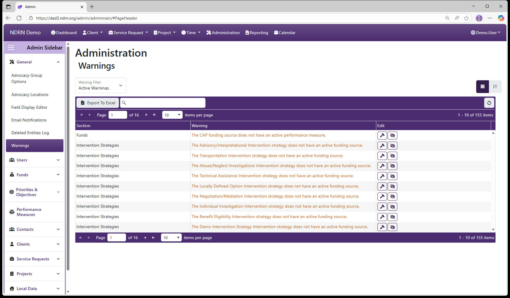
← Previous: Deleted Entities Log | Next: Section: Users →
Home / Configuration Reference / Section: Users
Section: Users
Users were called “Employees” in DAD 2. This has been updated to “Users” in DAD 3 to better align with commonly used terminology in software applications.
User Maintenance
Security Groups
User Assignment Types
Positions
Teams
Substitute Time Sheet Supervisors
← Previous: Warnings | Next: User Maintenance →
Home / Configuration Reference / Section: Users / User Maintenance
User Maintenance
Page Type: Table/Utility (URL: https://dad3.ndrn.org/admin/admindisplayusers)
Associated Record Types
- Disabilities (Funds section)
- Security Groups
- Teams
- Regions (Service Requests section)

Operations
Add New User

To add a new user to the system, click the Add User button at the top of the page. The Add New User form will appear.
- At a minimum, First Name, Last Name, User Name, and Password must be entered in Tab 1: Basic Info. The Active Date should be set to the first day that the new user should be able to log in to DAD, and it can be set to a future date if desired.
- To complete a new User setup successfully, Security Groups must be assigned to the new user (Tab 4: Security Groups).
- Agencies using Timekeeping functions must configure the new user’s settings in Tab 2: Timekeeping.
- Agencies using Regions and/or Teams should configure these settings in Tab 5: Teams and Tab 6: Regions.
- Agencies using DAD to track employee demographic information can optionally enter this information in Tab 1: Basic Info and Tab 3: Disabilities.
Edit User

To edit an existing User record, select the Edit User button (displayed as a pencil and paper icon in the Edit column of the Users grid). The Edit User form will appear. The layout is almost identical to the Add New User form, but:
- It does not have a Password field (changing a user password is a separate action instead).
- There are additional fields related to account activity.
Delete User

To delete an existing User record, select the Delete User button (displayed as a trashcan icon in the Edit column of the Users grid). Agency policies should define when to deactivate versus delete a user account. In most cases, a user account cannot be deleted because it is referenced by other records in the database.
Change Password

To change an existing User's password, select the Change Password button (displayed as a key icon in the Edit column of the Users grid).
Unlock Account

To unlock a user’s account after too many failed login attempts, select the Unlock Account button (displayed as an unlocked padlock icon in the Edit column of the Users grid).
In DAD 3.0, a user's account will unlock automatically after 5 minutes when locked due to failed login attempts.
Reset 2FA

Use this operation to reset a user’s two-factor authentication (2FA) configuration so they can re-enroll their device.
In DAD 3.0 users can reset their own 2FA under Manage your Acccount settings if they are able to log in to their account, or through use of the recoevery codes that are generated when setting up their authenicator.
User Form Layout and Contents
User Form Tab 1: Basic Info

-
First Name (Short Text - required) Enter the user's first name as it should display in DAD records. If a user has a different name for timesheet/payroll purposes, you can specify this in Tab: 2 Timekeeping, Time Sheet First Name.
-
Last Name (Short Text - required) Enter the user's last name as it should display in DAD records. If a user has a different name for timesheet/payroll purposes, you can specify this in Tab: 2 Timekeeping, Time Sheet Last Name.
-
User Number (Short Text - optional/agency defined)
Agencies can use this field to align Employee records with their other systems if desired.
-
Advocacy Location (Dropdown selection)
This dropdown is populated with active Advocacy Locations (see Administration > General > Advocacy Locations).
-
Position (Dropdown selection)
This dropdown is populated with active Positions (see Administration > Users > Positions).
-
Home Phone, Work Phone, and Alternate Phone (Short Text - optional)
-
Email
It is highly recommended to enter the user’s valid email address in this field. Without an email address, it is not possible for a user to recover their account with Forgot my Password or receive notifications related to Timesheets and Supervisor Closure Reviews. (Short text - optional; but required for notifications and Forgot Password functionality)
-
Username
This is the name the user will enter to log in to DAD. (Short Text - required)
-
Password
In DAD 2, passwords were restricted to 8–14 characters and required at least 1 uppercase, 1 lowercase, 1 number, and 1 special character. In DAD 3, password length can be longer than 14 characters. (Short Text - required)
-
Generate Random Password button
Clicking this button automatically generates a random password in the Password field.
-
Gender (Dropdown selection)
-
Ethnicity (Dropdown selection)
-
Race (Dropdown selection)
-
Active Date
An account is considered Active if the current date is on or after the Active Date, and the Inactive Date is either empty or set to a date after the current date. A user cannot log in to an account unless it is active. (Date - required)
-
Inactive Date
An account is no longer active when the current date is after the Inactive Date. Important: An account remains active through the Inactive Date and becomes inactive the day after the Inactive Date. (Date - optional)
-
Force Password Change on Next Login
Administrators can check this box when creating or editing an account to force a user to set a new password the next time they log in. The box is unchecked automatically after the password has been changed. (Checkbox)
-
Notes
This field is for agency use. It is commonly used to document any changes to a user’s account settings. (Long Text - optional)
User Form Tab 2: Timekeeping

-
Paid Hourly Rate (Number (up to 2 decimal places) - optional) This field is used primarily by agencies who do timekeeping calculations that reference employee pay rates in the DAD Report Generator. Important: Any user who has Report Generator access technically has access to this information.
-
Billable Hourly Rate (Number (up to 2 decimal places) - optional)
-
Full Time Equivalent (Number (up to 2 decimal places) - optional)
-
Is Exempt (Checkbox)
Users marked "Exempt" will not be subject to recording Clock In/Clock Out times that align with their total recorded non-leave time.
-
Can Approve Timesheets as a Supervisor (Checkbox)
Check this box to allow a user to appear on the dropdown list for the Time Sheet Supervisor field in the User form. Note: A user must also have proper permissions granted to approve timesheets. See Timekeeping Settings.
-
Can Process Timesheets as an Accountant (Checkbox)
Check this box to allow a user to appear on the dropdown list for the Time Sheet Accountant field in the User form. Note: A user must also have proper permissions granted to process timesheets.
-
Time Security Level (Dropdown selection)
-
Time Lock Date (Date - optional)
-
Time Sheet Supervisor (Dropdown selection)
Submitted timesheets for this user will appear on Time Sheet Supervisor's approval queue. -
Time Sheet Accountant (Dropdown selection)
Approved timesheets for this user will appear on Time Sheet Accountant's processing queue. -
Time Sheet First Name (Short Text - optional)
If a user uses a different name for timesheet/payroll purposes, you can specify it here. Otherwise, leave this field blank.
-
Time Sheet Last Name (Short Text - optional)
If a user uses a different name for timesheet/payroll purposes, you can specify it here. Otherwise, leave this field blank.
User Form Tab 3: Disabilities
This tab contains a multiselect checklist of active Disabilities (options are defined in Administration > Funds > Disabilities) with a text-field filter. If your agency tracks disability information for staff in DAD, you can select any disabilities that apply. Otherwise, leave this section blank.

User Form Tab 4: Security Groups
This tab contains a multiselect checklist of active Security Groups (options are defined in Administration > Users > Security Groups) with a text-field filter. Selecting a Security Group will grant the user all of its permissions. Note: It is essential that all DAD users are added to the All Users Security Group.

User Form Tab 5: Teams
Multiselect checklist of Teams (options are defined in Administration > Users > Teams) with a Status Filter dropdown and a Filter Teams text field to narrow down selections to items containing the text entered. If your agency assigns users to Teams in DAD, select them here. Otherwise, leave this section blank.

User Form Tab 6: Regions
Multiselect checklist of Regions (options are defined in Administration > Users > Regions) with a Status Filter dropdown and a Filter Regions text field to narrow down selections to items containing the text entered. If your agency assigns users to Regions in DAD, select them here. Otherwise, leave this section blank.

← Previous: Section: Users | Next: Security Groups →
Home / Configuration Reference / Section: Users / Security Groups
Security Groups
Page Type: Table (URL: https://dad3.ndrn.org/admin/admindisplaysecuritygroups)
Associated Record Type: Users
See Appendix A: Permissions Reference for a complete list of DAD permissions.
Security groups are used to manage user access by grouping permissions together. Each security group is configured with a specific set of permissions that define what actions members of that group are allowed to perform. Instead of assigning permissions individually to each user, administrators add users to one or more security groups, and the users automatically inherit the permissions associated with those groups.
Permissions are additive, meaning a user’s effective access is the combined total of all permissions granted by every security group they belong to. If a user is a member of multiple security groups, they receive all permissions from each group—nothing is overridden or taken away by belonging to another group.
For example, if one group allows viewing records and another allows editing data, a user who belongs to both groups can both view records and edit data.
One Security Group should be mapped to Administrators, and one Security Group should be mapped to All Users. All other Security Groups should be mapped to the General Mapped Security Group.
For DAD to function correctly, ALL users must be be added to the All Users Security Group.

Security Groups Form
Basic Info Tab
Enter the name, description and mapping of the Security Group.

Users Tab
Select the users in this Security Group.

Permissions Tab
Select the permissions to grant users in this Security Group.
See Appendix A: Permissions Reference for a complete list of DAD permissions.

← Previous: User Maintenance | Next: User Assignment Types →
Home / Configuration Reference / Section: Users / User Assignment Types
User Assignment Types
Page Type: Table (URL: https://dad3.ndrn.org/admin/admindisplayadvassignmenttypes)
A User Assignment Type is selected when assigning a user to a Service Request or Project. Agencies can create custom User Assignment Types or edit the name of exisitng selections if desired.
When a User Assignment Type that is mapped to Primary or Associated is selected for a record, the user can make use of the Assigned Dashboard views (e.g. Assigned Service Requests), filtering by Assignment type.
The Supervisor User Assignment option appears only for records requiring supervisor review, and is used to designate the supervisor responsible for reviewing records for closure (so they will appear in their Supervisor Approval Queue and Supervisor Closures list for that record type).
User Assignment Types Admin Page
As with most DAD Administration settings pages of this type, operations include: Add User Assignment Type button to add a new entry, Edit and Delete buttons for exisiting entries, and Export to Excel button to export the settings to a file.

User Assignment Types Form

-
Name Display name of the User Assignment Type (Short Text - required)
-
Description This field is for agency use. (Long Text - optional)
-
Mapped Assignment Type Selections: Primary, Associated, Supervisor, Locally Defined Option (Dropdown selection)
-
Send Email to Assignee If this box is checked, users who are assigned to a record as this User Assignment Type will automatically receive an email notification. (Checkbox)
-
Is the Default Option If this box is checked, this User Assignment Type will be selected by default for new User Assigments. (Checkbox)
-
Active Date The User Assignment Type will appear as an option for records with a Reference Date that is between the Active Date and Inactive Date. (Required)
-
Inactive Date The User Assignment Type will appear as an option for records with a Reference Date that is between the Active Date and Inactive Date. (Optional)
← Previous: Security Groups | Next: Positions →
Home / Configuration Reference / Section: Users / Positions
Positions
Page Type: Table (URL: https://dad3.ndrn.org/admin/admindisplayadvpositions)
Positions are agency-defined options for User records. Position information for a User can be accessed with the Report Generator, making it a useful field for organizing and managing an agency's users.
As with most DAD Administration settings pages of this type, operations include: Add Position button to add a new entry, Edit and Delete buttons for exisiting entries, and Export to Excel button to export the settings to a file.
This screenshot contains examples of position names agencies might use:

Positions Form
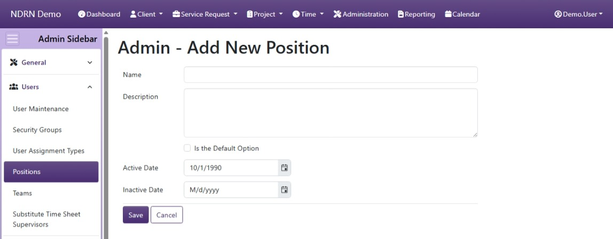
-
Name Display name of the Position (Short Text - required)
-
Description This field is for agency use. (Long Text - optional)
-
Is the Default Option If this box is checked, this Position will be selected by default for new Users. (Checkbox)
-
Active Date The Position will appear as an option between the Active Date and Inactive Date. (Required)
-
Inactive Date The Position will appear as an option between the Active Date and Inactive Date. (Optional)
← Previous: User Assignment Types | Next: Teams →
Home / Configuration Reference / Section: Users / Teams
Teams
Page Type: Table (URL: https://dad3.ndrn.org/admin/admindisplayteams)
Associated Record Type: Users
Teams are agency-defined selections. Each project and service request must be assigned to one or more Teams. Each User can be assigned to (associated with) one or more Teams, either in the User Maintenence form or in the Teams form below.
Teams are used in various lists/views of Service Requests and Projects. Users can view records that are assigned to their Team. Additionally, Service Request and Project View (Own) and Edit (Own) permissions are also granted for all records assigned to the User's Team, not just the individual User. For this reason, assigning Users to Teams can be used as a way to manage record permissions.
Operations available on this page include: Add Team button to add a new entry, Edit and Delete buttons for exisiting entries, Expand All and Collapse All buttons to show or hide Associated Users, and an Export to Excel button to export the settings to a file.
To export the Users for each Team, they must be displayed as a column. Before exporting, edit the Columns settings and select Users for display.
This screenshot contains some examples of Teams:

Teams Form
Basic Info Tab

-
Name Display name of the Team (Short Text - required)
-
Description This field is for agency use. (Long Text - optional)
-
Is the Default Option If this box is checked, this Team will be selected by default for new records. (Checkbox)
-
Assignable to Service Requests If this box is checked, this Team will appear as an option in Service Request records.
-
Assignable to Projects If this box is checked, this Team will appear as an option in Project records.
-
Active Date The Team will appear as an option between the Active Date and Inactive Date. (Required)
-
Inactive Date The Team will appear as an option between the Active Date and Inactive Date. (Optional)
Users Tab
This tab contains a list of Users (filtered by Active Users by default). The "Filter Users" text box can be used to narrow down the list (start typing the user name). Check all Users assigned to the Team, and check Is Team Leader for any user needing to utilize a permission involving "Team Leader Access"..

← Previous: Positions | Next: Substitute Time Sheet Supervisors →
Home / Configuration Reference / Section: Users / Substitute Time Sheet Supervisors
Substitute Time Sheet Supervisors
Page Type: Table (URL: https://dad3.ndrn.org/admin/admindisplaysubsupervisors)
This is an administrative utility that allows a DAD Administrator to specify a Substitute Time Sheet Supervisor for another user. While Time Sheet Supervisors can specify their own substitute time sheet supervisor from their account, in some cases it may be necessary to apply a substitution in DAD Administration.

Add Substitution Form

-
Supervisor User who needs a substitution (Dropdown - required)
-
Substitute Supervisor User who will be acting as substitute timesheet supervisor (Dropdown - required)
-
Start Date Date when the substitution will begin (Required)
-
End Date Date when the substitution will end (Required)
← Previous: Teams | Next: Section: Funds →
Home / Configuration Reference / Section: Funds
Section: Funds
The tables in this section define the options for fields that are necessary to collect and report required information in Program Performance Reports (PPRs). Individual options are associated to the funding source(s) to which they apply.
Funding Sources
AT Device Types
Collaborations
Collaborators
Disabilities
Ethnicities
Intervention Strategies
Living Arrangements
Outcome Statements
Problems
Subproblems
Problems / Subproblems
Races
Reasons For Closing
← Previous: Substitute Time Sheet Supervisors | Next: Funding Sources →
Home / Configuration Reference / Section: Funds / Funding Sources
Funding Sources
Page Type: Table (URL: https://dad3.ndrn.org/admin/admindisplayadvfunds)
Associated Field Types
- Collaborations
- Disabilities
- Ethnicities
- Intervention Strategies
- Living Arrangements
- Problems/Subproblems
- Races
- Reasons for Closing
- Priorities / Objectives
- Performance Measures
- Local Data Fields
- AT Device Types (funds mapped to PAAT only)
About Funding Sources
In DAD 3, the configuration settings for a funding source can be viewed and edited in a single form. Each form tab contains associations for each record type.
By default, only active associations/options are displayed in the Funding Sources table. The section of Filters above the table can be modified to show Inactive or All options for each assocatied field. To hide (collapse) the Filters section from your display, click the "Filters" heading.
The basic settings for each funding source are displayed by default in the Funding Sources table. An expanded entry (viewed by clicking the "+" icon next to an entry or clicking "Expand All") reveals cards that list the options for each associated field.
Use caution when editing associations. To avoid creating end user validation errors and warnings, you should not unassociate options that have been used in existing records; instead you should make obsolete options inactive by entering an Inactive Date equal to the end of the prior reporting period.

Funding Sources Form
The form use to create and edit Funding Sources. The form is divided into several tabs, one for Basic Info and one for each Associated field type.
Associations between a funding source and an associated field option can be edited from this form or from the settings form for the associated field.
Basic Info Tab

Options: Is the Default Option, Use with Service Requests, Use with Projects, Include in Timekeeping Calculations
Collaborations Tab

Disabilities Tab

Ethnicities Tab

Intervention Strategies Tab

Living Arrangements Tab

Problems & Subproblems Tab

Races Tab

Reasons for Closing Tab

Priorities & Objectives Tab

Performance Measures Tab

Local Data Fields Tab

← Previous: Section: Funds | Next: AT Device Types →
Home / Configuration Reference / Section: Funds / AT Device Types
AT Device Types
Page Type: Table (URL: https://dad3.ndrn.org/admin/admindisplayadvatdevicetypes)
Has Field Mapping / Associated Record Types: Funding Sources
AT Device Types are options used to track AT devices and services received as a result of PAAT-funded services, for reporting purposes. Mapped AT Device Type selections reflect the federally reportable options. Agencies may modify the AT Device Types that end users see and add additional types if desired. For accurate reporting, each mapped AT Device Type must have at least one active selection mapped to it.
AT Device Types can only be associated with funding sources that are mapped to PAAT. For most agencies, this means that PAAT will be the only Funding Source displayed on the Funds tab.

AT Device Types Form
Basic Info Tab

-
Name Display name of the option (Short Text - required)
-
Description This field is for agency use. (Long Text - optional)
-
Mapped AT Device Type Selections are based on PAAT PPR
-
Is the Default Option This box should be checked for the "Not Selected" option. (Checkbox)
-
Active Date The option will appear as an option for records with a Reference Date that is between the Active Date and Inactive Date. (Required)
-
Inactive Date The option will appear as an option for records with a Reference Date that is between the Active Date and Inactive Date. (Optional)
Funds Tab
Unless you have multiple funding sources mapped to PAAT, you will only see one fund selection on this tab.

← Previous: Funding Sources | Next: Collaborators →
Home / Configuration Reference / Section: Funds / Collaborators
Collaborators
Page Type: Table (URL: https://dad3.ndrn.org/admin/admindisplayadvcollaborators)
Has Field Mapping / Associated Record Types: Collaborations
Collaborators and Collaborations are used in DAD to track activities involving collaboration with other agencies and entities. The OnePPR requires reporting on these collaborations, including details on collaboration with certain types of entities (reflected in the Mapped Collaborators selections). Project records can have one or more Collaborations selected. Each Collaboration can consist of one or more Collaborators.
Collaborators and Collaborations can be entered and maintained by a DAD Administrator or by a User with the Edit: Collaborations permission granted.
Collaborators are entered on this page, and can be associated with exisitng Collaborations. To create a new Collaboration, go to the Collaborations page.
Operations available on this page include:
- Add Collaborator button to add a new entry
- Edit and Delete buttons for exisiting entries
- Expand All and Collapse All buttons to show or hide Associated Collaborations, and
- Export to Excel button to export these settings to a file
To export the Collaborations for each Collaborator, they must be displayed as a column. Before exporting, edit the Columns settings and select Collaborations for display.
This screenshot contains some example Collaborators:

Collaborators Form
Basic Info Tab

-
Name Display name of the option (Short Text - required)
-
Description This field is for agency use. (Long Text - optional)
-
Mapped Collaborator Selections are based on OnePPR. Use "Local Collaborating Agency" for any collaborators that do not fall under one of the other categories.
-
Is the Default Option This box should be checked for the "Not Selected" option. (Checkbox)
-
Active Date The option will appear as an option for records with a Reference Date that is between the Active Date and Inactive Date. (Required)
-
Inactive Date The option will appear as an option for records with a Reference Date that is between the Active Date and Inactive Date. (Optional)
Collaborations Tab
This tab list exisiting Collaborations. Check a Collaboration to associate it with your Collaborator.

← Previous: AT Device Types | Next: Collaborations →
Home / Configuration Reference / Section: Funds / Collaborations
Collaborations
Page Type: Table (URL: https://dad3.ndrn.org/admin/admindisplaycollaborations)
Collaborators and Collaborations are used in DAD to track activities involving collaboration with other agencies and entities. The OnePPR requires reporting on these collaborations, including details on collaboration with certain types of entities (reflected in the Mapped Collaborators selections). Project records can have one or more Collaborations selected - options are determined based on Funding Source. Each Collaboration can consist of one or more Collaborators.
Collaborators and Collaborations can be entered and maintained by a DAD Administrator or by a User with the Edit: Collaborations permission granted.
Collaborations are entered on this page, and can be associated with exisitng Collaborations and existing Funding Sources.
Operations available on this page include:
- Add Collaboration button to add a new entry
- Edit and Delete buttons for exisiting entries
- Expand All and Collapse All buttons to show or hide Associated Collaborators and Funding Sources, and
- Export to Excel button to export these settings to a file
Associated Record Types: Collaborators, Funding Sources

Collaborations Form
Basic Info Tab

-
Name Display name of the option (Short Text - required)
-
Description of Collaboration This field corresponds to information that must be provided for each Collaboration in the OnePPR. (Long Text - required)
-
Role of P&A in Collaboration This field corresponds to information that must be provided for each Collaboration in the OnePPR. (Long Text - required)
-
Active Date The option will appear as an option for records with a Reference Date that is between the Active Date and Inactive Date. (Required)
-
Inactive Date The option will appear as an option for records with a Reference Date that is between the Active Date and Inactive Date. (Optional)
Collaborators Tab
Select one or more Collaborators for this Collaboration.

Funds Tab
Select one or more Funding Sources for this Collaboration.
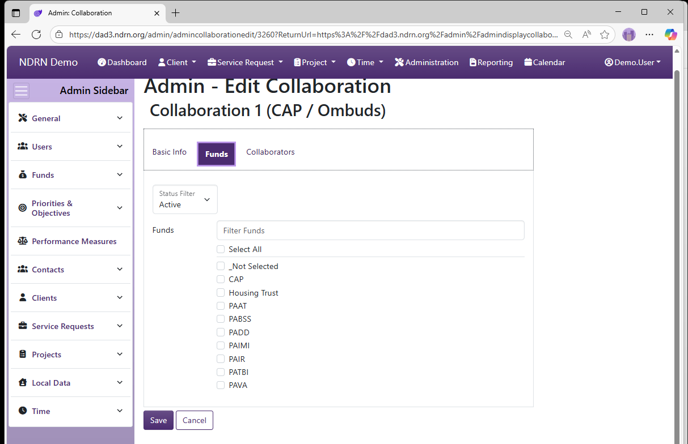
← Previous: Collaborators | Next: Disabilities →
Home / Configuration Reference / Section: Funds / Disabilities
Disabilities
Page Type: Table (URL: https://dad3.ndrn.org/admin/admindisplayadvdisabilities)
Has Field Mapping / Associated Record Types: Funding Sources
Disabilities are options used to track a Client Disabilities for eligibility determination and reporting purposes. Mapped Disability selections reflect the federally reportable options for all funding sources. Agencies may modify Disability selections that end users see and add additional Disabilities if desired. For accurate reporting, each mapped Disability must have at least one active selection mapped to it.
In the Client Record, multiple Disabilities can be selected from a checklist. In a Service Request Record, only Disabilities that were selected for the Client are are associated with the funding source for a Service Request will be available for selection as the "Primary Disability" for that record.
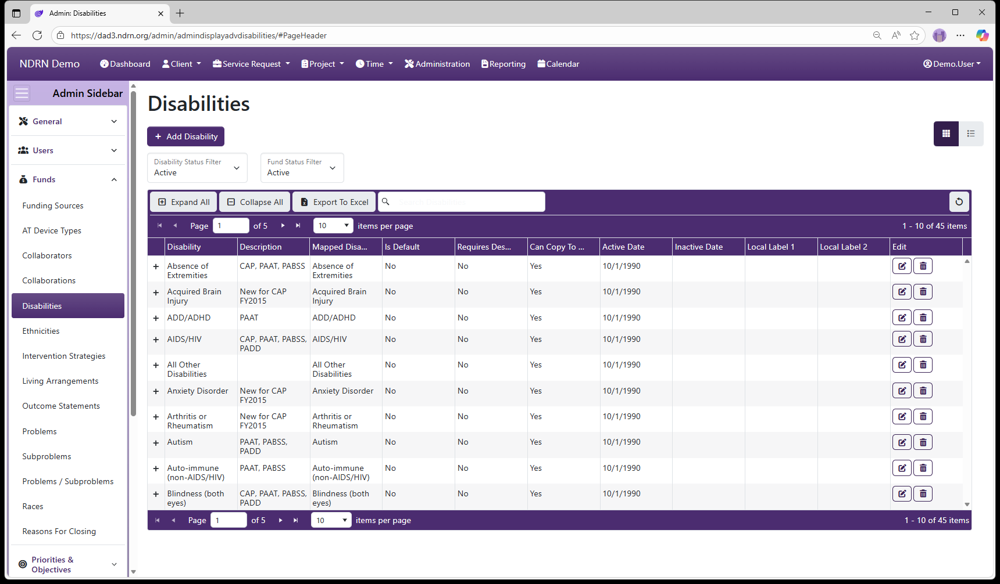
Disabilities Form
Basic Info Tab
Options: Requires Further Description, Can Be Copied Back To The Client When Selected As Primary, Is the Default Option, Local Labels

-
Name Display name of the option (Short Text - required)
-
Description This field is for agency use. (Long Text - optional)
-
Mapped Disability Selections are based on PPR categories.
-
Requires Further Description This box should be checked to require additional text description when selected. (Checkbox)
-
Is the Default Option This box should be checked for the "Not Selected" option. (Checkbox)
-
Active Date The option will appear as an option for records with a Reference Date that is between the Active Date and Inactive Date. (Required)
-
Inactive Date The option will appear as an option for records with a Reference Date that is between the Active Date and Inactive Date. (Optional)
-
Local Label 1 and Local Label 2 Local Labels can be used to define categories and/or alternate terms for each option. Local Labels can then be accessed using the Report Generator.
Funds Tab
Select one or more Funding Sources for this Disability.

← Previous: Collaborations | Next: Ethnicities →
Home / Configuration Reference / Section: Funds / Ethnicities
Ethnicities
Page Type: Table (URL: https://dad3.ndrn.org/admin/admindisplayadvethnicities)
Has Field Mapping / Associated Record Types: Funding Sources
Ethnicities are options used to record a Client's Ethnicity for reporting purposes. Mapped Ethnicity selections reflect the federally reportable options for all funding sources. For accurate reporting, each mapped Ethnicity must have at least one active selection mapped to it.
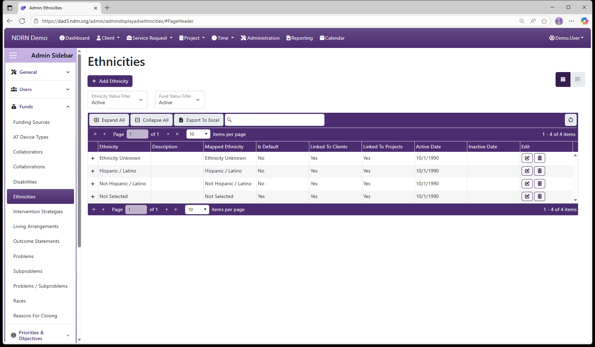
Ethnicities Form
Basic Info Tab

-
Name Display name of the option (Short Text - required)
-
Description This field is for agency use. (Long Text - optional)
-
Mapped Ethnicity Selections are based on PPR categories.
-
Is the Default Option This box should be checked for the "Not Selected" option. (Checkbox)
-
Use with Clients This box should be checked unless the option should not appear for Clients (Checkbox)
-
Use with Projects This box should be checked unless the option should not appear for Projects (Checkbox)
-
Active Date The option will appear as an option for records with a Reference Date that is between the Active Date and Inactive Date. (Required)
-
Inactive Date The option will appear as an option for records with a Reference Date that is between the Active Date and Inactive Date. (Optional)
Funds Tab
Select Funding Sources for this Ethnicity option. For Projects, only Ethnicity options associated with a selected Funding Source will appear. Ethnicity options for Client records are not determined base don funding source.
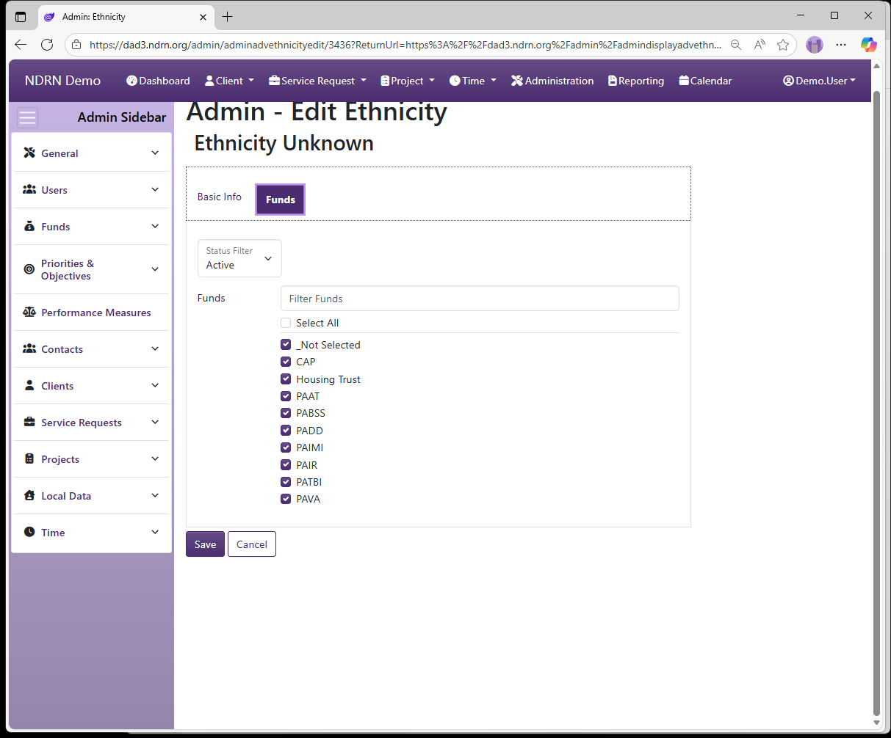
← Previous: Disabilities | Next: Intervention Strategies →
Home / Configuration Reference / Section: Funds / Intervention Strategies
Intervention Strategies
Page Type: Table (URL: https://dad3.ndrn.org/admin/admindisplayadvinterventionstrategies)
Has Field Mapping / Associated Record Types: Funding Sources, Service Request Types (Service Requests)
Intervention Strategies are options used to track the type of intervention used when closing a Service Request, for reporting purposes. Mapped Intervention Strategy selections reflect the federally reportable options for all funding sources. Agencies may modify Intervention Strategy selections that end users see if desired. For accurate reporting, each mapped Intervention Strategy must have at least one active selection mapped to it for each applicable Funding Source.
Options: Is the Default Option, Requires an Explanation

Intervention Strategies Form
Basic Info Tab

-
Name Display name of the option (Short Text - required)
-
Description This field is for agency use. (Long Text - optional)
-
Mapped Intervention Strategy Selections are based on PPR categories.
-
Is the Default Option This box should be checked for the "Not Selected" option. (Checkbox)
-
Requires an Description This box should be checked to require additional text description when selected. (Checkbox)
-
Active Date The option will appear as an option for records with a Reference Date that is between the Active Date and Inactive Date. (Required)
-
Inactive Date The option will appear as an option for records with a Reference Date that is between the Active Date and Inactive Date. (Optional)
Funds Tab
Select one or more Funding Sources for this Intervention Strategy.

Service Request Types Tab
Select one or more Service Request Types for this Intervention Strategy.

← Previous: Ethnicities | Next: Living Arrangements →
Home / Configuration Reference / Section: Funds / Living Arrangements
Living Arrangements
Page Type: Table (URL: https://dad3.ndrn.org/admin/admindisplayadvlivingarrangements)
Has Field Mapping / Associated Record Types: Funding Sources
Living Arrangements are options used to track a Client's living arrangement and reporting purposes. Mapped Living Arrangement selections reflect the federally reportable options for all funding sources. For accurate reporting, each mapped Living Arrangement must have at least one active selection mapped to it, and all Living Arrangaments must be associated with the proper funding sources based on reporting requirements.
In the Client Record, a Living Arrangement can be selected from the list of all active Living Arrangaments. When a Service Request is created for the client, the Client's Living Arranagement will be auitomatically copies to the Service Request Living Arrnagement if that Living Arranagement is associated with the Service Request's funding source. A Service Request Living Arrangement may differ from the Client Living Arrangement in cases where the client is residing in multiple sor temporary settings, or if the Client Living Arrnagement is not an option for the Service Request's funding source.
Options: Is the Default Option, Is a Facility, Use with Clients and Service Requests, Use with Projects

Living Arrangements Form
Basic Info Tab

-
Name Display name of the option (Short Text - required)
-
Description This field is for agency use. (Long Text - optional)
-
Mapped Living Arrangement Selections are based on PPR categories.
-
Is the Default Option This box should be checked for the "Not Selected" option. (Checkbox)
-
Is a Facility This box should be checked for Living Arrangements that are facilities. (Checkbox)
-
Use with Clients and Service Requests This box should be checked for Living Arranagements that are reportable for individual cases. (Checkbox)
-
Use with Projects This box should be checked for Living Arranagements that are reportable for projects (e.g. OnePPR-funded projects). (Checkbox)
-
Active Date The option will appear as an option for records with a Reference Date that is between the Active Date and Inactive Date. (Required)
-
Inactive Date The option will appear as an option for records with a Reference Date that is between the Active Date and Inactive Date. (Optional)
Funds
Select one or more Funding Sources for this Living Arrangement.

← Previous: Intervention Strategies | Next: Outcome Statements →
Home / Configuration Reference / Section: Funds / Outcome Statements
Outcome Statements
Page Type: Table (URL: https://dad3.ndrn.org/admin/admindisplayadvoutcomes)
Has Field Mapping / Associated Record Types: Funding Sources, Problems
Outcome Statements are options used to track case outcome information when closing a Service Request with a PABSS, PAIMI or CAP funding source, for reporting purposes. Mapped Outcome Statement selections reflect the federally reportable options for these funding sources. Agencies may modify Outcome Statement selections that end users see if desired. For accurate reporting, each mapped Outcome Statement must have at least one active selection mapped to it for each applicable Funding Source.
Historically, reportable Outcomes Statements differed depending on the case Problem Area. Because federal reporting reqirements have since changed, it is no longer necessary to restrict selections based on Problem. Simply Select All when associating Problems with Outcome Statements.

Outcome Statements Form
Basic Info Tab
Options: Is the Default Option, Requires an Explanation

Funds Tab
Select one or more Funding Sources for this Outcome Statement.

Problems Tab

← Previous: Living Arrangements | Next: Problems →
Home / Configuration Reference / Section: Funds / Problems
Problems
Page Type: Table (URL: https://dad3.ndrn.org/admin/admindisplayadvproblems)
Has Field Mapping / Associated Record Types: Subproblems, Outcome Statements
Problems are used in conjunction with Subproblems to categorize both cases and projects, for federal reporting purposes. Mapped Problem selections reflect the federally reportable options for all P&A funding sources. Agencies may modify the text of the Problem selections that end users see if desired.
Problems are not associated directly with Funding Sources. They are associated with one or more Subproblems, and each Problem/Subproblem pair is then associated with Funding Sources.

Problems Form
Basic Info Tab
Options: Is the Default Option, Use with Service Requests, Use with Projects, Local Labels
Local Label 1 and Local Label 2 can be used to apply alternative names to Problems for use with the Report Generator.

Subproblems Tab
Under some funding sources (e.g. PAIR, CAP), subproblems are not reported. In those cases, the Problem is associated with a single Subproblem for that Funding Source (usually with the same label as the Problem, though agency setups vary).
When a Problem has multiple Suproblem selections for a Funding Source, the Problem should be associated with the default Subproblem (e.g. Not Selected), and that "Problem/Not Selected" pair should then be associated with that Funding Source. This allows the Subproblem dropdown selection to function correctly.

Outcome Statements Tab
Historically, reportable Outcomes Statements differed depending on the case Problem Area. Because federal reporting reqirements have since changed, it is no longer necessary to restrict selections based on Problem. Simply Select All when associating Problems with Outcome Statements.

← Previous: Outcome Statements | Next: Subproblems →
Home / Configuration Reference / Section: Funds / Subproblems
Subproblems
Page Type: Table (URL: https://dad3.ndrn.org/admin/admindisplayadvsubproblems)
Subproblems are used in conjunction with Problems to categorize cases and projects, for federal reporting purposes. Mapped Subproblem selections reflect the federally reportable options for all P&A funding sources. Agencies may modify the text of the Subproblem selections that end users see if desired.
Subproblems are not associated directly with Funding Sources. They are associated with one or more Problems, and each Problem/Subproblem pair is then associated with Funding Sources.
Has Field Mapping / Associated Record Type: Problems

Subproblems Form
Basic Info Tab
Options: Is the Default Option, Use with Service Requests, Use with Projects, Local Labels

Problems Tab
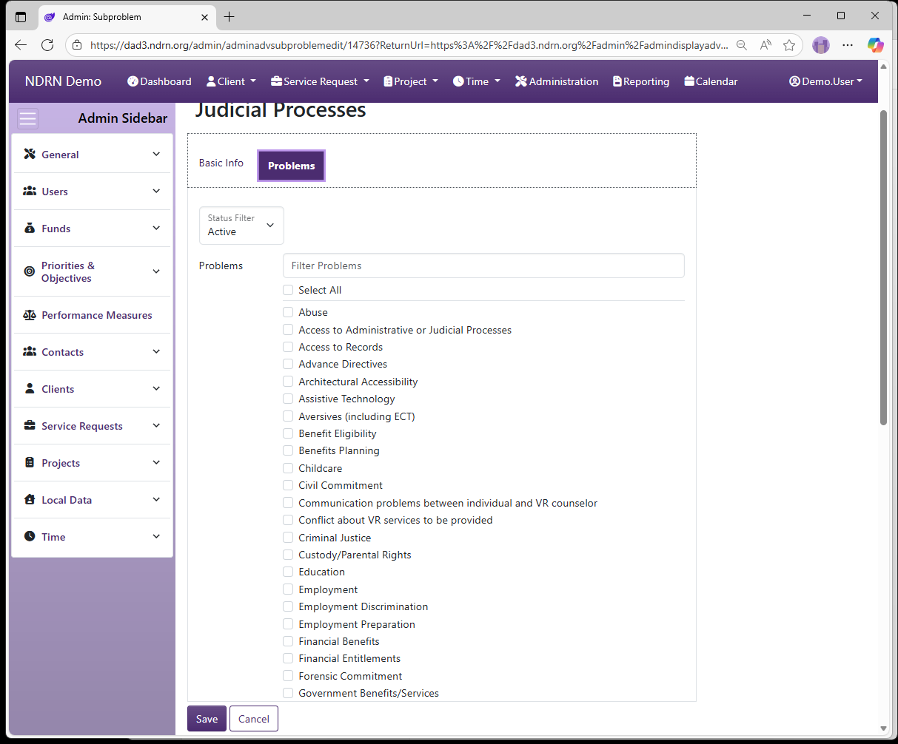
← Previous: Problems | Next: Problems / Subproblems →
Home / Configuration Reference / Section: Funds / Problems / Subproblems
Problems / Subproblems
Page Type: Table (URL: https://dad3.ndrn.org/admin/admindisplayadvproblemsubproblems)
Has Field Mapping / Associated Record Types: Funding Sources, Local Data Fields (Local Data)
Problems are used in conjunction with Subproblems to categorize both cases and projects, for federal reporting purposes.
Problems are not associated directly with Funding Sources. They are associated with one or more Subproblems, and each Problem/Subproblem pair is then associated with Funding Sources. This settings page defines the Funding Source associations, as well as any custom Local Data field associations.

Problems & Subproblems Form
Basic Info Tab
This tab defines the Associated Problem / Subproblem pair.

Funds Tab
Under some funding sources (e.g. PAIR, CAP), subproblems are not reported. In those cases, the Problem is associated with a single Subproblem for that Funding Source (usually with the same label as the Problem, though agency setups vary).
When a Problem has multiple Suproblem selections for a Funding Source, the Problem should be associated with the default Subproblem (e.g. Not Selected), and that "Problem/Not Selected" pair should then be associated with that Funding Source. This allows the service request Subproblem dropdown selection to function correctly.

Local Data Fields Tab
Do not select any Local Data Fields in this section. In most cases, nothing should be checked on this tab. Any customization to Local Data Fields should be done on the Local Data Fields page.

← Previous: Subproblems | Next: Races →
Home / Configuration Reference / Section: Funds / Races
Races
Page Type: Table (URL: https://dad3.ndrn.org/admin/admindisplayadvraces)
Has Field Mapping / Associated Record Types: Funding Sources
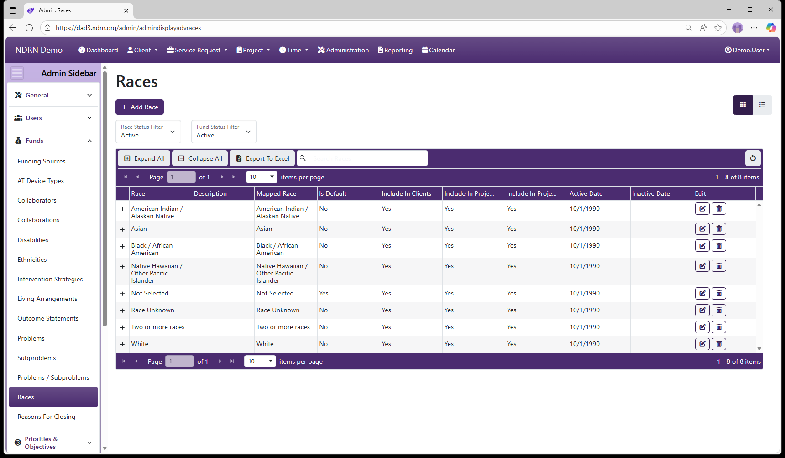
Races Form
Basic Info Tab
-
Name Display name of the option (Short Text - required)
-
Description This field is for agency use. (Long Text - optional)
-
Mapped Race Selections are based on PPR categories.
-
Use with Clients This box should be checked unless the option should not appear for Clients (Checkbox)
-
Use with Project Race This box should be checked unless the option should not appear for Projects (Checkbox)
-
Use with Project Primary Ethnic Groups (legacy) Agencies using Primary Ethnic Groups in Projects should check this box unless the option should not appear for Project Primary Ethnic Groups (Checkbox) (Checkbox)
-
Is the Default Option This box should be checked for the "Not Selected" option. (Checkbox)
-
Active Date The option will appear as an option for records with a Reference Date that is between the Active Date and Inactive Date. (Required)
-
Inactive Date The option will appear as an option for records with a Reference Date that is between the Active Date and Inactive Date. (Optional)

Funds Tab
In most setups, all Funding Sources should be selected for each Race.
← Previous: Problems / Subproblems | Next: Reasons For Closing →
Home / Configuration Reference / Section: Funds / Reasons For Closing
Reasons For Closing
Page Type: Table (URL: https://dad3.ndrn.org/admin/admindisplayadvreasonsforclosing)
Has Field Mapping / Associated Record Types: Funding Sources, Service Request Types (Service Requests)
Reasons for Closing are options used when closing a Service Request or Project, for reporting purposes. Mapped Reason for Closing selections reflect the federally reportable options for all funding sources. For accurate reporting, each mapped Reason for Closing must have at least one active selection mapped to it for each applicable Funding Source.
Unlike Intervention Strategy and Outcome Statement, Reason for Closing is used for reporting on all Service Request Types, not just Case Services.

Reasons For Closing Form
Basic Info Tab
-
Name Display name of the option (Short Text - required)
-
Description This field is for agency use. (Long Text - optional)
-
Mapped Reason for Closing Selections are based on PPR categories.
-
Is the Default Option This box should be checked for the "Not Selected" option.
-
Requires an Explanation This box should be checked for "Other" options that require further detail. (Checkbox)
-
Use with Service Requests This box should be checked if the option should be used with Service Requests (Checkbox)
-
Use with Projects This box should be checked if the option should be used with Projects (Checkbox)
-
Active Date The option will appear as an option for records with a Reference Date that is between the Active Date and Inactive Date. (Required)
-
Inactive Date The option will appear as an option for records with a Reference Date that is between the Active Date and Inactive Date. (Optional)
-
Local Label 1 and Local Label 2 can be used to apply alternative names to Reasons for Closing for use with the Report Generator.

Funds Tab
Select one or more Funding Sources for this Reason for Closing.

Service Request Types Tab
Select one or more Service Request Types for this Reason for Closing.

← Previous: Races | Next: Section: Priorities & Objectives →
Home / Configuration Reference / Section: Priorities & Objectives
Section: Priorities & Objectives
Priorities and Objectives are agency-defined options used to catgerorize service requests and projects for federal reporting purposes. Most of the federal funding sources require agencies to set Priorities and Objectives (called "Goals and Priorities" in the OnePPR). When agencies change their Priorities and Objectives, these changes in DAD are made effective as of October 1 of the new fiscal year.
Each Priority (Goal in the OnePPR) can have one of more Objectives (Priorities in the OnePPR) associated with it (similar to Problem/Subproblem pairs). Each Priority/Objective pair is associated with Funding Sources, Service Request Types, Project Types, and Actions (used in Timekeeping).
When a Priority has multiple Objectives, it should also be associated with the default Objective (e.g. Not Selected). This allows the Objective dropdown selection to function correctly.
Use caution in updating Priorities and Objectives to avoid creating validation warnings or errors on older records. In most cases, you should avoid removing any associations that has been in use. Instead, enter a September 30 Inactive Date for selections no longer in use, and create new selections with an Active Date of October 1.
To ensure that updates to Priorities and Objectives are reflected in service requests and projects carried over from the prior fiscal year, change the reference dates of all carryover records to October 1 of the new Fiscal Year after reporting for the prior fiscal year has been completed (see Change Service Request Reference Dates and Change Project Reference Dates)
← Previous: Reasons For Closing | Next: Priorities →
Home / Configuration Reference / Section: Priorities & Objectives
Priorities
Page Type: Table (URL: https://dad3.ndrn.org/admin/admindisplaypriorities)
Associated Record Types: Objectives
Each Priority (Goal in the OnePPR) can have one of more Objectives (Priorities in the OnePPR) associated with it (similar to Problem/Subproblem pairs). Each Priority/Objective pair is associated with Funding Sources, Service Request Types, Project Types, and Actions (used in Timekeeping).
Use caution in updating Priorities and Objectives to avoid creating validation warnings or errors on older records. In most cases, you should avoid removing any associations that has been in use. Instead, enter a September 30 Inactive Date for selections no longer in use, and create new selections with an Active Date of October 1.
To ensure that updates to Priorities and Objectives are reflected in service requests and projects carried over from the prior fisccal year, change the reference dates of all carryover records to October 1 of the new Fiscal Year after reporting for the prior fiscal year has been completed (see Change Service Request Reference Dates and Change Project Reference Dates)

Priorities Form
Basic Info Tab
Options: Priority Code, Link to Service Requests, Link to Projects, Is the Default Option
Priority Code can be used to apply alternative short names to Priorities for use with the Report Generator.

Objectives Tab
Associate each priority with one or more Objectives.

← Previous: Section: Priorities & Objectives | Next: Objectives →
Home / Configuration Reference / Section: Priorities & Objectives
Objectives
Page Type: Table (URL: https://dad3.ndrn.org/admin/admindisplayobjectives)
Associated Record Types: Priorities
Each Priority (Goal in the OnePPR) can have one of more Objectives (Priorities in the OnePPR) associated with it (similar to Problem/Subproblem pairs). Each Priority/Objective pair is associated with Funding Sources, Service Request Types, Project Types, and Actions (used in Timekeeping).
Use caution in updating Priorities and Objectives to avoid creating validation warnings or errors on older records. In most cases, you should avoid removing any associations that has been in use. Instead, enter a September 30 Inactive Date for selections no longer in use, and create new selections with an Active Date of October 1.
To ensure that updates to Priorities and Objectives are reflected in service requests and projects carried over from the prior fisccal year, change the reference dates of all carryover records to October 1 of the new Fiscal Year after reporting for the prior fiscal year has been completed (see Change Service Request Reference Dates and Change Project Reference Dates)
Objectives Form
Basic Info Tab
Options: Objective Code, Link to Service Requests, Link to Projects, Is the Default Option
Priority Code can be used to apply alternative short names to Priorities for use with the Report Generator.

Priorities Tab
Associate each Objective with one or more Priorities.

← Previous: Priorities | Next: Priorities / Objectives →
Home / Configuration Reference / Section: Priorities & Objectives / Priorities / Objectives
Priorities / Objectives
Page Type: Table (URL: https://dad3.ndrn.org/admin/admindisplaypriorityobjectives)
Associated Record Types: Funding Sources (Funds), Actions, Service Request Types (Service Requests), Project Types (Projects)
Priorities and Objectives are agency-defined options used to catgerorize service requests and projects for federal reporting purposes. Most of the federal funding sources require agencies to set Priorities and Objectives (called "Goals and Priorities" in the OnePPR). When agencies change their Priorities and Objectives, these changes in DAD are made effective as of October 1 of the new fiscal year.
Each Priority (Goal in the OnePPR) can have one of more Objectives (Priorities in the OnePPR) associated with it (similar to Problem/Subproblem pairs). Each Priority/Objective pair is associated with Funding Sources, Service Request Types, Project Types, and Actions (used in Timekeeping).
When a Priority has multiple Objectives, it should also be associated with the default Objective (e.g. Not Selected). This allows the Objective dropdown selection to function correctly.
Use caution in updating Priorities and Objectives to avoid creating validation warnings or errors on older records. In most cases, you should avoid removing any associations that has been in use. Instead, enter a September 30 Inactive Date for selections no longer in use, and create new selections with an Active Date of October 1.

Priorities / Objectives Form
Basic Info Tab

Funds Tab
Select Funding Sources for the Priority/Objective pair.

Actions Tab
Select Actions for the Priority/Objective pair. Assocaited Actions will be available in the Timemekeeping Record Time formr for records using this Priority/Objective.

Service Request Types Tab
Select Service Request Types for the Priority/Objective pair.

Project Types Tab
Select Project Types for the Priority/Objective pair.

← Previous: Objectives | Next: Actions →
Home / Configuration Reference / Section: Priorities & Objectives / Actions
Actions
Page Type: Table (URL: https://dad3.ndrn.org/admin/admindisplayactions)
Actions are agency-defined options used when recording time spent on service requests and projects. Action options are determined by the Priority/Objective(s) selected for the record.
Associated Record Types: Priorities / Objectives
Select Actions for the Priority/Objective pair. Associated Actions will be available in the Timemekeeping Record Time form for records using a Priority/Objective that is associated with it.

Actions Form
Basic Info Tab
Options: Link to Service Requests, Link to Projects, Is the Default Option

Priorities & Objectives Tab
Select all Priority/Objective pairs associated with this Action.

← Previous: Priorities / Objectives | Next: Section: Performance Measures →
Home / Configuration Reference / Section: Performance Measures
Section: Performance Measures
Page Type: Table
Has Field Mapping / Associated Record Types: Funding Sources (Funds), Service Request Types (Service Requests), Project Types (Projects)
Performance Measures were iniitally added to DAD to facilate PPR data collection for the OnePPR funding sources (PADD, PAAT, PATBI, PAVA). They have since been expanded for use with PAIMI PPR data collection, and they can optionally be configured for use with other funding sources if agencies wish to track similar measures agency-wide.
Performance Measures are displayed when a case or project is Prepared for Closing. At leaset one Performance Measure must be selected to close a record with a OnePPR funding source. Most Performance Measures describe a measurable quantity and require a numerical value to be entered if selected.
To ensure that your Performance Measure settings are aligned with current PPR data collection requirements, email DADsupport@ndrn.org to request the most current version of the DAD PPR Settings Reference (Excel workbook format).
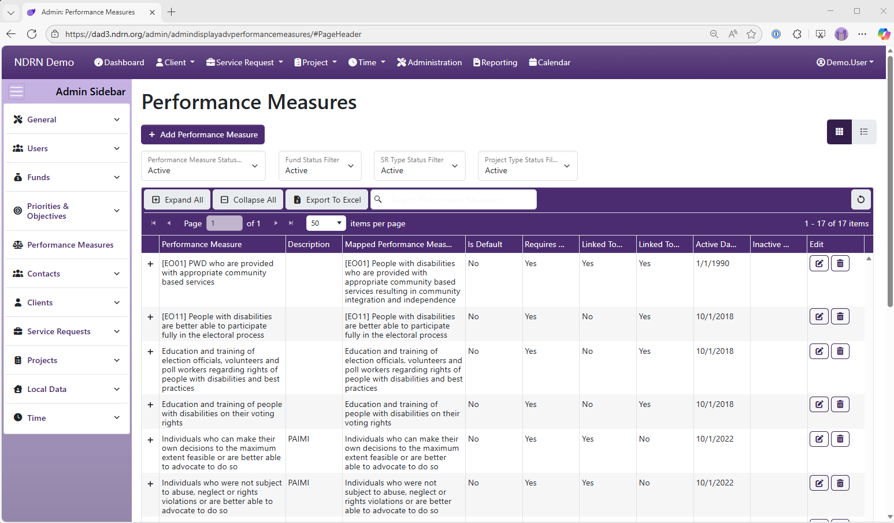
Performance Measures Form
Basic Info Tab
Options: Is the Default Option, Requires a Numeric Value, Use with Service Requests, Use With Projects

Funds Tab
Select Funding Sources for this Performance Measure. 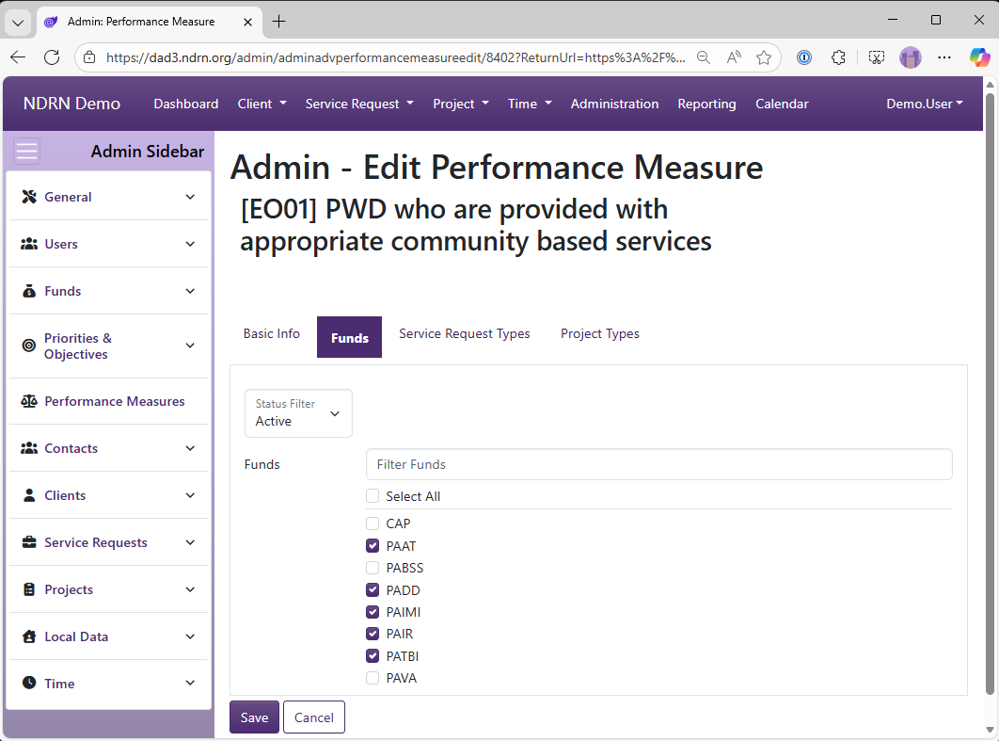
Service Request Types Tab
Select Service Request Types for this Performance Measure.

Project Types Tab
Select Project Types for this Performance Measure.

← Previous: Priorities & Objectives / Actions | Next: Section: Contacts →
Home / Configuration Reference / Section: Contacts
Section: Contacts
Contacts are records of individuals and other entities (agencies, organizations, etc.) that are associated with one or more records (Clients, Service Requests or Projects). Users can add one or more contacts when creating a new record, or they can be added to existing records.
When creating a Contact, a user is first prompted to search existing Contact records (including Clients) to see if the Contact already exists in DAD. It is usually advisable to select (and update) the existing Contact record rather than creating a duplicate Contact. Agency polcies may vary on Contact creation.
Agencies can add and modify the options for Contact Type, Guardian Type (for Contact Type(s) mapped to Guardian), Organization Type (for Organizational Contacts), and Relationships dropdowns.
The Zip Codes settings page is also located in the Contacts section. These settings are used with the "Lookup Zip" function to auto-populate City, State, County and Location information in Client and Contact records.
← Previous: Section: Performance Measures | Next: Contact Types →
Home / Configuration Reference / Section: Contacts / Contact Types
Contact Types
Page Type: Table (URL: https://dad3.ndrn.org/admin/admindisplayadvcontacttypes)
Contact Types define several categories of contacts (individuals or organizations) that may be tracked for Clients, Service Requests or Projects. By default, the following Contact Types exist:
- Adversary - the adversary or opposing party for a service request or case
- Caller - the individual calling the P&A for assistance (used in DAD 2.0 in creation of Quick I&Rs)
- Guardian - the legal guardian for a client
- Primary Contact - the primary contact for a client
- Referrer - the organization or individual who referred the caller or client to the P&A/CAP
- General Contact - a catch all catgeory for all other contacts
Agencies can create additional Contact Types if desired. Each Contact Type can be associated with Clients, Service Requests, and/or Projects. Agency configurations and conventions used vary, but a typical configuration could be as follows:
| Contact Type | Associated Record Types |
|---|---|
| Adversary | Service Request, Project |
| Caller | Service Request |
| Guardian | Client |
| Primary Contact | Client |
| Referrer | Service Request |
| General Contact | Client, Service Request, Project |

Contact Types Form
Options: Is the Default Option, Associated with Clients, Client Display Order, Associated with SRs, SR Display Order, Associated with Projects, Project Display Order

← Previous: Section: Contacts | Next: Guardian Types →
Home / Configuration Reference / Section: Contacts / Guardian Types
Guardian Types
Page Type: Table (URL: https://dad3.ndrn.org/admin/admindisplayadvguardiantypes)
Guardian Types populate an additional dropdown for Contact Type(s) mapped to Guardian. Agencies may customize this list to reflect the terminology in use in their state.

Guardian Types Form
Options: Is the Default Option

← Previous: Contact Types | Next: Organization Types →
Home / Configuration Reference / Section: Contacts / Organization Types
Organization Types
Page Type: Table (URL: https://dad3.ndrn.org/admin/admindisplayadvorganizationtypes)
Organization Types populate an additional dropdown for Organizational Client and Contact records where the Is Organization checkbox is selected. Agencies may customize this list as desired.

Organization Types Form
Options: Is the Default Option

← Previous: Guardian Types | Next: Relationships →
Home / Configuration Reference / Section: Contacts / Relationships
Relationships
Page Type: Table (URL: https://dad3.ndrn.org/admin/admindisplayadvrelationships)
Relationships populate a dropdown that provides further information about a Contact, and is displayed (in addition to Contact Type) in the Contact list/grid display in Clients, Service Requests and Projects, as well as in Connections that can be displayed for the results of Contact Searches. Agencies are encouraged to populate this list with options that are meaningful in the context of intake, conflict checking and case handling.
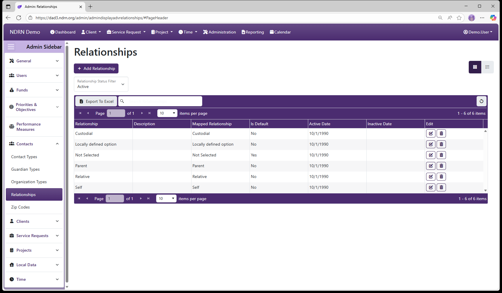
Relationships Form
Options: Is the Default Option

← Previous: Organization Types | Next: Zip Codes →
Home / Configuration Reference / Section: Contacts / Zip Codes
Zip Codes
Page Type: Table with Import option (URL: https://dad3.ndrn.org/admin/admindisplayzipcodes)
Zip Code settings are used with the Lookup City/State function to auto-populate City, State, County and Location information in Client and Contact records. Agencies can import multiple entries into this table using the Import Zip Codes function.
If a user looks up a zip code that matches more than one entry in this table (i.e. two or more cities fall under a single zip code), an additional dialog will appear prompting the user to select the correct city.

Zip Codes Form
Fields: Zip, City, State, County (dropdown), Location (dropdown)

Zip Codes Import Form
Note: The imported file should be an Excel spreadsheet (.xls, .xlsx) and column headers must be Zip, City, State, County, Location.

← Previous: Relationships | Next: Section: Clients →
Home / Configuration Reference / Section: Clients
Section: Clients
The Client Section contains tables and utilities for Client records. Tables contain the options for dropdown fields used in Client records.
With the exception of Gender-related fields that are used for reporting in PPRs for some of the P&A funding sources, these fields are for internal agency use.
Accommodations
Can Survey Options
Counties
Education Levels
Genders
Gender Identities
Pronouns
Sexual Orientation
Is Registered Voter Options
Languages
On Mailing List Options
Change Client Reference Dates
Add Multiple Client Notes
← Previous: Zip Codes | Next: Accommodations →
Home / Configuration Reference / Section: Clients / Accommodations
Accommodations
Page Type: Table (URL: https://dad3.ndrn.org/admin/admindisplayadvaccommodations)
Accommodations options are displayed in a multi-select checklist in the Client record, to track Client accommodation needs. This field is not used for reporting purposes.
While mappings are present for the default set of Accommodations, agencies are encouraged to add, inactive, and modify the options in this list as needed.

Accommodations Form
Options: Is the Default Option
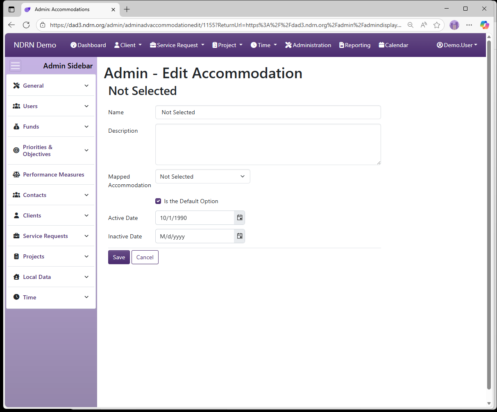
← Previous: Section: Clients | Next: Can Survey Options →
Home / Configuration Reference / Section: Clients / Can Survey Options
Can Survey Options
Page Type: Table (URL: https://dad3.ndrn.org/admin/admindisplayadvcansurveyoptions)
Can Survey options are displayed in a dropdown in the Client record, to indicate whether the Client can receive agency surveys. This field is not used for reporting purposes.

Can Survey Options Form
Options: Is the Default Option

← Previous: Accommodations | Next: Counties →
Home / Configuration Reference / Section: Clients / Counties
Counties
Page Type: Table (URL: https://dad3.ndrn.org/admin/admindisplayCounties)
Associated Record Types: Regions
Counties contain the list of counties served by your Advocacy Group. County is tracked in both Client and Service Request records. Optionally, counties can be associated with Regions.

Counties Form
Basic Info Tab
Options: Is Urban, Is the Default Option

Regions Tab
Select the Region(s) associated with this County.

← Previous: Can Survey Options | Next: Education Levels →
Home / Configuration Reference / Section: Clients / Education Levels
Education Levels
Page Type: Table (URL: https://dad3.ndrn.org/admin/admindisplayadveducationlevels)
Education Level options are displayed in a dropdown in the Client record, to track a Client's education level. This field is not used for reporting purposes.
While mappings are present for the default set of Education Levels, agencies are encouraged to add, inactive, and modify the options in this list as needed.

Education Levels Form
Options: Is the Default Option

← Previous: Counties | Next: Genders →
Home / Configuration Reference / Section: Clients / Genders
Genders
Page Type: Table (URL: https://dad3.ndrn.org/admin/admindisplayadvgenders)
Genders are options used to record a Client's Gender for reporting purposes. Mapped Gender selections reflect the federally reportable options.
Because reporting requirements have changed frequently in recent years, there may be mapped options that are no longer collected for all funding sources. To ensure that your settings are aligned with current PPR data collection requirements, email DADsupport@ndrn.org to request the most current version of the DAD PPR Settings Reference (Excel workbook format).
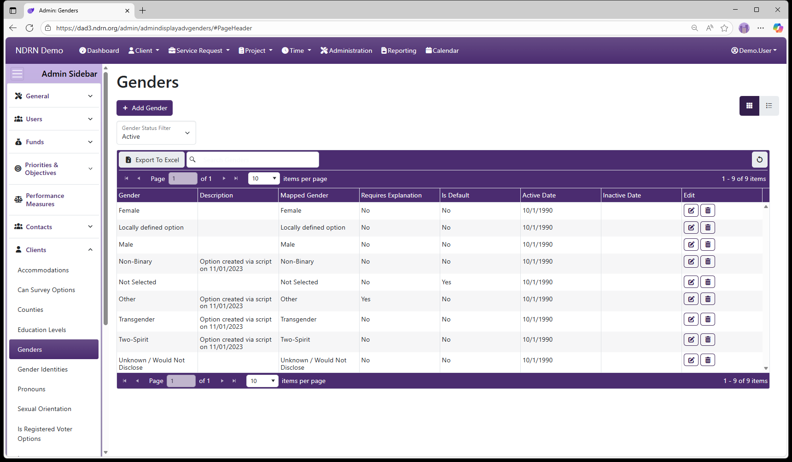
Genders Form
Options: Requires an Explanation, Is the Default Option

← Previous: Education Levels | Next: Gender Identities →
Home / Configuration Reference / Section: Clients / Gender Identities
Gender Identities
Page Type: Table (URL: https://dad3.ndrn.org/admin/admindisplayadvgenderidentities)
Gender Identity options are displayed in a dropdown in the Client record, to record a client's gender identity when it differs from their gender. This field is not used for reporting purposes.

Gender Identities Form
Options: Is the Default Option

← Previous: Genders | Next: Pronouns →
Home / Configuration Reference / Section: Clients / Pronouns
Pronouns
Page Type: Table (URL: https://dad3.ndrn.org/admin/admindisplayadvpronouns)
Pronouns options are displayed in a dropdown in the Client record, to record a client's preferred pronouns. This field is not used for reporting purposes.

Pronouns Form
Options: Requires an Explanation, Is the Default Option
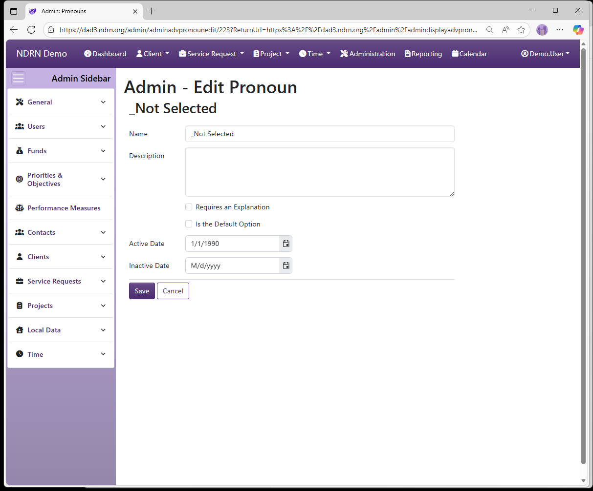
← Previous: Gender Identities | Next: Sexual Orientation →
Home / Configuration Reference / Section: Clients / Sexual Orientation
Sexual Orientation
Page Type: Table (URL: https://dad3.ndrn.org/admin/admindisplayadvsexualorientations)
Sexual Orientation options are used to record a Client's Sexual Orientation for reporting purposes. Mapped Sexual Orientation selections reflect the federally reportable options.
Because reporting requirements have changed frequently in recent years, this data is no longer collected for all funding sources.

Sexual Orientation Form
Options: Requires an Explanation, Is the Default Option

← Previous: Pronouns | Next: Is Registered Voter Options →
Home / Configuration Reference / Section: Clients / Is Registered Voter Options
Is Registered Voter Options
Page Type: Table (URL: https://dad3.ndrn.org/admin/admindisplayadvisvoteroptions)
Is Registered Voter options are displayed in a dropdown in the Client record, for agencies that wish to track Client voter registration status. This field is not used for reporting purposes.

Is Registered Voter Options Form
Options: Is the Default Option

← Previous: Sexual Orientation | Next: Languages →
Home / Configuration Reference / Section: Clients / Languages
Languages
Page Type: Table (URL: https://dad3.ndrn.org/admin/admindisplayadvlanguages)
Languages are dropdown options used to record both the language use by Clients and in Publications. For a language to appear for Client records, the Include for Clients option must be selected. This field is not used for reporting purposes.

Languages Form
Options: Include for Clients, Is the Default Option
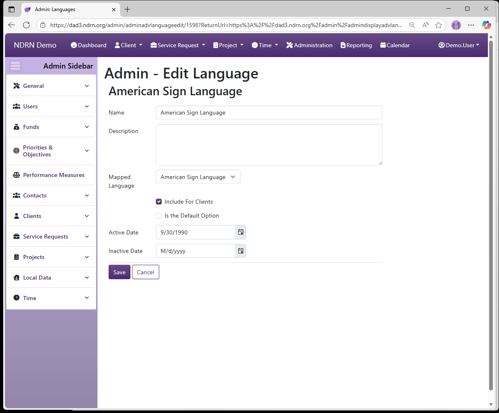
← Previous: Is Registered Voter Options | Next: On Mailing List Options →
Home / Configuration Reference / Section: Clients / On Mailing List Options
On Mailing List Options
Page Type: Table (URL: https://dad3.ndrn.org/admin/admindisplayadvonmailinglistoptions)
On Mailing List options are displayed in a dropdown in the Client record, to indicate whether the Client can by included in agancy mailing lists. This field is not used for reporting purposes.

On Mailing List Options Form
Options: Is the Default Option

← Previous: Languages | Next: Change Client Reference Dates →
Home / Configuration Reference / Section: Clients / Change Client Reference Dates
Change Client Reference Dates
Page Type: Utility/Tool (URL: https://dad3.ndrn.org/admin/adminclientreferencedates)
This utility changes the Reference Date on multiple Client records in a single action. Client records are specified by a comma-separated list of Client IDs.
The Reference Date in a record is used to determine which options should be displayed in each Dropdown field. When a record is created, its Reference Date is set to Creation Date (Client) or Date Opened (SR, Project).
Options that are Active on the Reference Date of a record will display.

← Previous: On Mailing List Options | Next: Add Multiple Client Notes →
Home / Configuration Reference / Section: Clients / Add Multiple Client Notes
Add Multiple Client Notes
Page Type: Utility/Tool (URL: https://dad3.ndrn.org/admin/adminbatchclientnotes)
This utility adds an identical Client Note to multiple Client records in a single action. Client records are specified by a comma-separated list of Client IDs.

← Previous: Change Client Reference Dates | Next: Section: Service Requests →
Home / Configuration Reference / Section: Service Requests
Section: Service Requests
The Service Request Section contains utilities and tables of options for fields used primarily in Service Request records. This section also includes settings for Facilities, Publications, Notes, Attachments, and Appointments.
With the exception of Service Request Types that are essential for PPR reporting, the settings in this section are unique to each Advocacy Group and can be customized as desired.
Regions
Eligibility
Facilities
Facility Types
Publication Categories
Publications
Service Request Types
Note Categories
Attachment Categories
Appointment Categories
Change Service Request Reference Dates
Add Multiple Service Request Notes
← Previous: Add Multiple Client Notes | Next: Regions →
Home / Configuration Reference / Section: Service Requests / Regions
Regions
Page Type: Table (URL: https://dad3.ndrn.org/admin/admindisplayregions)
Associated Record Types: Counties (Clients), Users (Users)
Regions can be used to create geographical groups of counties and/or to associate staff with one or more geographical areas. Region information can then be pulled using the Report Generator.

Regions Form
Basic Info Tab
Options: Is the Default Option

Counties Tab
Select the Counties for this Region.

Users Tab
Select the users who are associated with this Region.

← Previous: Section: Service Requests | Next: Eligibility →
Home / Configuration Reference / Section: Service Requests / Eligibility
Eligibility
Page Type: Table (URL: https://dad3.ndrn.org/admin/admindisplayadveligibilities)
Eligibility options are displayed in a checklist for Service Requests. One or more Eligibilies can be selected. Typically, this list is populated with Agency funding sources. Agencies can use this field to track cases that meet eigibility requirements for more than one funding source.

Eligibility Form
Options: Is the Default Option

← Previous: Regions | Next: Facilities →
Home / Configuration Reference / Section: Service Requests / Facilities
Facilities
Page Type: Table (URL: https://dad3.ndrn.org/admin/admindisplayfacilities)
Associated Record Types: Facility Types
A Facility can be selected, when applicable, in both Service Request and Project Records. When a user selects a Facility Type, the dropdown list of Facilities is populated based on that selection.
Facility information is used in PPR reporting relating to Facility monitoring. Agencies may also use these fields to track other types of facilites and institutions that are the subject of service requests and/or projects.

Facilities Form
Basic Info Tab
Options: Is Default
Optionally, agencies can track the address, contact and capacity information for each facility. Information entered here can be retreived using the Report Generator.

Facility Types Tab
Select The Facility Type(s) for this Facility.

← Previous: Eligibility | Next: Facility Types →
Home / Configuration Reference / Section: Service Requests / Facility Types
Facility Types
Page Type: Table (URL: https://dad3.ndrn.org/admin/admindisplayadvfacilitytypes)
Associated Record Types: Facilities
A Facility can be selected, when applicable, in both Service Request and Project Records. When a user selects a Facility Type, the dropdown list of Facilities is populated based on that selection.
Facility information is used in PPR reporting relating to Facility monitoring. Agencies may also use these fields to track other types of facilites and institutions that are the subject of service requests and/or projects.

Facility Types Form
Basic Info Tab
Options: Is the Default Option

Facilities Tab
Select all facilities associated with this Facility Type.

← Previous: Facilities | Next: Publication Categories →
Home / Configuration Reference / Section: Service Requests / Publication Categories
Publication Categories
Page Type: Table (URL: https://dad3.ndrn.org/admin/admindisplaypublicationcategories)
Publications are records that can optionally be added to Service Request and Project records to track the dissemination of publications by the agency. If using this feature, Publication Types and Publications are configured here. If many publications are being tracked, agencies may more than one Publication Type to organize the possible selections.
Associated Record Types: Publications
Options: Is the Default Option

← Previous: Facility Types | Next: Publications →
Home / Configuration Reference / Section: Service Requests / Publications
Publications
Page Type: Table (URL: https://dad3.ndrn.org/admin/admindisplaypublications)
Publications are records that can optionally be added to Service Request and Project records to track the dissemination of publications by the agency. If using this feature, Publication Types and Publications are configured here. If many publications are being tracked, agencies may more than one Publication Type to organize the possible selections.
Associated Record Types: Publication Categories

Publications Form
Basic Info Tab
Publication records contain the following fields:
- Name
- Description
- Publication Number (internal ID)
- Number Created (total number produced)
- Local Label 1, Local Label 2 (alternate labels for internal use)
- Publication Type (dropdown selection)
- Language (dropdown selection)
- Active Date
- Inactive Date

Publication Categories Tab
Select the Publication Categories for this publication.

← Previous: Publication Categories | Next: Service Request Types →
Home / Configuration Reference / Section: Service Requests / Service Request Types
Service Request Types
Page Type: Table with Collapsible Filters section (URL: https://dad3.ndrn.org/admin/admindisplayadvservicereqtypes)
Service Request Types are used to specify the type of service being provided to an individual. The federal mappings for this field are used in PPR reports as follows:
| Mapped Service Request Type | Definition | Use in PPRs Reports |
|---|---|---|
| Case Service (Individual Advocacy Service/Self Advocacy) | Cases for individual clients | All P&A funding sources |
| Case Service (Individual Investigation) | Investigations pertaining to a single individual | PADD, PAAT, PATBI, PAIMI Only |
| Non-Case Service (I&R) | Information and Referral services | All P&A funding sources |
| Non-Case Service (Not I&R/TA) | For internal use | Not in PPR reports |
| Non-Case Service (Technical Assistance) | TA services to non-clients | PADD, PAAT, PATBI, PAVA, PAIMI Only |
Refer to instuctions for indivdual PPRs for definitions of each service type.

Service Request Types Form
Basic Info Tab
Options: Closure of SRs With This Type Requires Supervisor Review, Is the Default Option, Labal Labels

Intervention Strategies Tab
Select the Intervention Stratgies for this SR Type.

Reasons for Closing
Select the Reasons for Closing for this SR Type.

Priorities & Objectives
Select the Priorities and Objectives for this SR Type.

Performance Measures
Select the Performance Measures for this SR Type.

Local Data Fields
Select the Local Data Fields for this SR Type.

← Previous: Publications | Next: Note Categories →
Home / Configuration Reference / Section: Service Requests / Note Categories
Note Categories
Page Type: Table (URL: https://dad3.ndrn.org/admin/admindisplaynotecategories)
Note Categories can optionally be configured to categorize each note that is added to a record. When entering a note, the Note Categories for the associated record will display in the Note Categories dropwdown.

Note Categories Form
Options: Link to Client, Link to Service Request, Link to Project, Is the Default Option

← Previous: Service Request Types | Next: Attachment Categories →
Home / Configuration Reference / Section: Service Requests / Attachment Categories
Attachment Categories
Page Type: Table (URL: https://dad3.ndrn.org/admin/admindisplayattachmentcategories)
When in use, Attachments can be added directly to Client, Service Request, and Project records. They can also be added to individual Notes, and to Time entries.
Attachment Categories can be configured to categorize each attachment that is added to a record. When adding an attchment, the Attachment Category dropwdown will contain all options linked to the type of record to whcih the attachment is being added.
Attachment Categories Form
Options: Link to Client, Link to Service Request, Link to Project, Link to Client Note, Link to Service Reqeust Note, Link to Project Note, Link to Service Request Time, Link to Project Time, Link to Leave Time, Is the Default Option

← Previous: Note Categories | Next: Appointment Categories →
Home / Configuration Reference / Section: Service Requests / Appointment Categories
Appointment Categories
Page Type: Table (URL: https://dad3.ndrn.org/admin/admindisplayappointmentcategories)
When in use, Appointments can be added directly to Client, Service Request, and Project records. Appointment categories can be used to specify the type of appointment being scheduled.
Appointment Categories Form
Options: Link to Client, Link to Service Request, Link to Project, Is the Default Option

← Previous: Attachment Categories | Next: Change Service Request Reference Dates →
Home / Configuration Reference / Section: Service Requests / Change Service Request Reference Dates
Change Service Request Reference Dates
Page Type: Utility/Tool (URL: https://dad3.ndrn.org/admin/adminservicerequestreferencedates)
This utility changes the Reference Date on multiple Service Request records in a single action. Service Request records are specified by a comma-separated list of Service Request IDs.
The Reference Date in a record is used to determine which options should be displayed in each Dropdown field. When a record is created, its Reference Date is set to Creation Date (Client) or Date Opened (SR, Project).
Only options that are Active on the Reference Date of a record will display.

← Previous: Appointment Categories | Next: Add Multiple Service Request Notes →
Home / Configuration Reference / Section: Service Requests / Add Multiple Service Request Notes
Add Multiple Service Request Notes
Page Type: Utility/Tool (URL: https://dad3.ndrn.org/admin/adminbatchservicerequestnotes)
This utility adds an identical Service Request Note to multiple Service Requests in a single action. Service Requests are specified by a comma-separated list of Service Request IDs.

← Previous: Change Service Request Reference Dates | Next: Section: Projects →
Home / Configuration Reference / Section: Projects
Section: Projects
The Project Section contains utilities and field option tables for Projects.
Dissemination Of Information
Issues and Barriers
Project Types
Target Populations
Training Methods
Change Project Reference Dates
Add Multiple Project Notes
← Previous: Add Multiple Service Request Notes | Next: Dissemination Of Information →
Home / Configuration Reference / Section: Projects / Dissemination Of Information
Dissemination Of Information
Page Type: Utility/Tool (URL: https://dad3.ndrn.org/admin/admindisplayadvdisseminationofinformation)
Dissemination of Information options populate the Dissemination Activities multi-select field in Projects (all Project Types). This field can be used to flag projects that involve the various types of dissemination activities, for federal reporting purposes.

Dissemination Of Information Form
Options: Is the Default Option

← Previous: Section: Projects | Next: Issues and Barriers →
Home / Configuration Reference / Section: Projects / Issues and Barriers
Issues and Barriers
Page Type: Utility/Tool (URL: https://dad3.ndrn.org/admin/admindisplayadvissues)
Issues and Barriers options populate the Issues and Barriers multi-select field in Projects (all Project Types). This field can be used to track issues and barriers specific to the advocacy group, for federal reporting purposes and internal tracking purposes.

Issues and Barriers Form
Options: Requires and Explanation, Is the Default Option

← Previous: Dissemination Of Information | Next: Project Types →
Home / Configuration Reference / Section: Projects / Project Types
Project Types
Page Type: Table with collapsible filters section (URL: https://dad3.ndrn.org/admin/admindisplayadvprojecttypes)
Project Types are used to specify the type of project/activity/work being recorded. The federal mappings for this field are used in PPR reports as follows:
| Mapped Project Type | Definition | For use in PPRs Reports |
|---|---|---|
| Court Ordered Monitoring | Monitoring activities that are court ordered | PADD, PAAT, PATBI, PAIMI, PAIR* |
| Educating Policy Makers | Activities involving education of policymakers on a topic | All P&A funding sources |
| Education Training | Training activities | All P&A funding sources |
| Investigations | Training activities | PADD, PAAT, PATBI, PAIMI, PAIR* |
| Monitoring | Monitoring activities that are not court ordered | PADD, PAAT, PATBI, PAIMI, PAIR* |
| Other Systemic Advocacy (Non-Litigation) | Systemic activity that does not fall under other Project Types | All P&A funding sources |
| Outreach/PR | Outreach Activities | All P&A funding sources |
| Systemic Litigation/Class Actions | Litigation activities involving multiple individuals | All P&A funding sources except PAVA |
*Monitoring and Investigation activity types are not separately reported under PAIR but can be included in overall narrative reporting on systems activities.
Project Types Form
Basic Info Tab
Options: Timekeeper Type, Closure of Projects with this Type Requires Supervisor Review, Is the Default Option, Local Labels

Priorities & Objectives Tab
Select the Priority/Objective pairs associated with this Project Type.

Performance Measures Tab
Select the Performance Measures associated with this Project Type.

Local Data Fields Tab
Select the Local Data Fields associated with this Project Type.

← Previous: Issues and Barriers | Next: Target Populations →
Home / Configuration Reference / Section: Projects / Target Populations
Target Populations
Target Populations is a multi-select checkbox field that is used to track targeted population(s) for Project activities, for use in PPR narratives. It is required for Education/Training, Outreach, and Other Systemic Advocacy Project Types. It is optional for other Project Types. Agencies can make changes and additions to the Target Populations that are tracked with this field.
Target Populations Form
Options: Requires Explanation, Is the Deffault Option

← Previous: Project Types | Next: Training Methods →
Home / Configuration Reference / Section: Projects / Training Methods
Training Methods
Training Methods is a multi-select checkbox field used to track the method(s) of training used in Education/Training and Outreach/PR projects that are PAIR-funded. Training Method is reported in the PAIR PPR training narrative.
Training Methods Form
Options: Is the Default Option

← Previous: Target Populations | Next: Change Project Reference Dates →
Home / Configuration Reference / Section: Projects / Change Project Reference Dates
Change Project Reference Dates
This utility changes the Reference Date on multiple Project records in a single action. Projects are specified by a comma-separated list of Project IDs.
The Reference Date in a record is used to determine which options should be displayed in each Dropdown field. When a record is created, its Reference Date is set to Creation Date (Client) or Date Opened (SR, Project).
Only options that are Active on the Reference Date of a record will display.

← Previous: Training Methods | Next: Add Multiple Project Notes →
Home / Configuration Reference / Section: Projects / Add Multiple Project Notes
Add Multiple Project Notes
Page Type: Utility/Tool (URL: https://dad3.ndrn.org/admin/adminbatchprojectnotes)
This utility adds an identical Project Note to multiple Projects in a single action. Projects are specified by a comma-separated list of Project IDs.

← Previous: Change Project Reference Dates | Next: Section: Local Data →
Home / Configuration Reference / Section: Local Data
Section: Local Data
Local Data Fields are custom fields that agencies can create to track additional information that is not built in to DAD. Local Data fields can be created for Client, Service Request, and Project records. This is a powerful feature that can be used to adapt DAD for non P&A/CAP funding sources and to collect additional information of interest to your advvocacy group.
For example, an Advocacy group that wants to track how many veterans it serves could add a local data field labeled Is a Veteran to their Client records.
Local Data Fields are associated with several other fields (Funds, SR Types, Project Types, Problem/Subproblem). Each association can be "Not Specific" (meaning the Local Data Field will be displayed for records of all Funds/SR Types, etc.), or a selection items.
Local Data Fields
Out of Date Client Local Data Fields
Out of Date Project Local Data Fields
Out of Date SR Local Data Fields
← Previous: Add Multiple Project Notes | Next: Local Data Fields →
Home / Configuration Reference / Section: Local Data / Local Data Fields
Local Data Fields
Page Type: Table with Collapsible Filters section (URL: https://dad3.ndrn.org/admin/admindisplayuserdefinedfields)
Associated Record Types: Funding Sources, Service Request Types (Service Requests), Project Types, Problem/Subproblem

Local Data Fields Form
Basic Info Tab

-
Name (Short Text - required) Name of the Local Data Field (as seen in the Report Generator)
-
Label Text (Short Text - required) Name of the Local Data Field (as seen in records / by end users)
-
Help Text (Long Text - optional)
Agencies can add Help text to this field that displays as a tip when hovering over or navigating to the Local Data Field.
-
Field Type (Dropdown selection) Checkbox List Date Dropdown Dropdown List Numeric Box Text Box - Multi-Line Text Box - Single-Line Yes/No Radio Buttons
-
Display Type (Dropdown selection)
- Opening: Field displays at all times
- Closing*: Field displays only on Prepare for Closing
-
Client Association (Dropdown selection)
- On Creation: Field displays on the New Client Creation form; optional to answer
- On Creation - Required at SR Closing: Field displays on the New Client Creation form; Service Requests for the Client cannot be closed until it is completed (similar to reportable Client fields like Gender, Race and Ethnicity)
- On Edit: Field does not display on New Client Creation form, but appears on edit.
- On Edit - Required at SR Closing: Field does not display on New Client Creation form, but appears on edit. Service Requests for the Client cannot be closed until it is completed.
-
SR Association (Dropdown selection)
- Required: Field is required to close the service request
- Optional - On Creation: Field is optional and displays on the New Service Request form
- Optional - On Edit: Field is optional and does not display on New Service Request form, but appears on edit.
- Optional with Warnings - On Creation: Field is optional and displays on the New Service Request form; Validation Warning displays on record if unanswered.
- Optional with Warnings - On Edit: Field is optional and does not display on New Service Request form, but appears on edit; Validation Warning displays on record if unanswered.
-
Project Association (Dropdown selection)
- Required: Field is required to close the project
- Optional - On Creation: Field is optional and displays on the New Project form
- Optional - On Edit: Field is optional and does not display on New Project form, but appears on edit.
- Optional with Warnings - On Creation: Field is optional and displays on the New Project form; Validation Warning displays on record if unanswered.
- Optional with Warnings - On Edit: Field is optional and does not display on New Project form, but appears on edit; Validation Warning displays on record if unanswered.
-
Active Date and Inactive Date: Field will display in records with a Reference Date greater than or equal to the Active Date, and less than the Inactive Date (if entered).
Options Tab
This tab appears if Field Type is Checkbox list or Dropdown list. Each option appears based on Active and Inactive dates. Options are Requires Further Explanation and Is the Default Option.

Funds Tab
Select the Funding Sources for which this field should display. To display for all funding sources, use Not Funding Specific option.

Service Request Types Tab
If associated with Service Requests, select the SR Types for which this field should display. To display for all SR Types, use Not Service Request Type Specific option.

Project Types Tab
If associated with Projects, select the Project Types for which this field should display. To display for all Project Types, use Not Project Type Specific option.

Problems / Subproblems Tab
If desired, select Problem/Subproblem combinations: the field will only display if Problem and Subproblem for the record match. To display for all Problem/Subproblem selections, use Not Problem / Subproblem Specific option.

← Previous: Section: Local Data | Next: Out of Date Client Local Data Fields →
Home / Configuration Reference / Section: Local Data / Out of Date Client Local Data Fields
Out of Date Client Local Data Fields
Page Type: Utility/Tool (URL: https://dad3.ndrn.org/admin/admindisplayinactiveclientuserdefinedfields)
This utility can be used to clear local data field answers in bulk from records where the field is inactive. This can be achived for individual records using the Clear Inactive Fields option that displays when viewing an affected record.

← Previous: Local Data Fields | Next: Out of Date SR Local Data Fields →
Home / Configuration Reference / Section: Local Data / Out of Date SR Local Data Fields
Out of Date SR Local Data Fields
Page Type: Utility/Tool (URL: https://dad3.ndrn.org/admin/admindisplayinactiveservicerequestuserdefinedfields)
This utility can be used to clear local data field answers in bulk from records where the field is inactive. This can be achived for individual records using the Clear Inactive Fields option that displays when viewing an affected record.

← Previous: Out of Date Client Local Data Fields | Next: Out of Date Project Local Data Fields →
Home / Configuration Reference / Section: Local Data / Out of Date Project Local Data Fields
Out of Date Project Local Data Fields
Page Type: Utility/Tool (URL: https://dad3.ndrn.org/admin/admindisplayinactiveprojectuserdefinedfields)
This utility can be used to clear local data field answers in bulk from records where the field is inactive. This can be achived for individual records using the Clear Inactive Fields option that displays when viewing an affected record.

← Previous: Out of Date SR Local Data Fields | Next: Section: Time →
Home / Configuration Reference / Section: Time
Section: Time
For agencies using Timekeeping, the settings in this section are used to configure timekeeping and timesheet display options, specify dropdown options for fields in the Record Time form, and customize the labels for Time Security Levels.
← Previous: Out of Date Project Local Data Fields | Next: Time Security Levels →
Home / Configuration Reference / Section: Time / Time Security Levels
Time Security Levels
Page Type: Table (URL: https://dad3.ndrn.org/admin/admindisplayadvtimesecuritylevels)
In most cases, the default options in this section can be left as-is. If an agency wishes to limit the number of Time Security Levels or rename them, items can be edited or deleted (if not in use).

Time Security Levels Form
Options: Is the Default Option

← Previous: Section: Time | Next: Timekeeper Types →
Home / Configuration Reference / Section: Time / Timekeeper Types
Timekeeper Types
Page Type: Table (URL: https://dad3.ndrn.org/admin/admindisplayadvtimekeepertypes)
Timekeeper Type is the top field on the Record Time form. Several fields on this form are conditionally displayed based on the type selected. In most cases, agancies will have options for Service Request, Project and Leave Timekeeper Types.

Timekeeper Types Form
Options: Is the Default Option, Include Last 25 Projects in Project Types

← Previous: Time Security Levels | Next: Leave Types →
Home / Configuration Reference / Section: Time / Leave Types
Leave Types
Page Type: Table (URL: https://dad3.ndrn.org/admin/admindisplayadvleavetypes)
Leave Types are categories used to group Leave options. A typical use is to categorize leave into Paid and Unpaid types. The Leave Type dropdown is displayed on the Record Time form when the Leave Timekeeper Type is selected. The dropdown options for Leave are those with the selected Leave Type.

Leave Types Form
Options: Is the Default Option

← Previous: Timekeeper Types | Next: Leave →
Home / Configuration Reference / Section: Time / Leave
Leave
Page Type: Table (URL: https://dad3.ndrn.org/admin/admindisplayleave)
Agencies specify the types of Leave that users can record. A Leave Type is selected for each Leave entry. Each Leave selection specified here will have its own column in the Labor Distribution Report that is commonly used for accounting/finance purposes.

Leave Form
Options: Leave Type, Is the Default Option

← Previous: Leave Types | Next: Timekeeper Options →
Home / Configuration Reference / Section: Time / Timekeeper Options
Timekeeper Options
Page Type: Settings Form (URL: https://dad3.ndrn.org/admin/admintimekeeperedit)
These settings are used to configure timekeeping functions and customize the the messages and labels on timesheets. All text settings are optional.
Timekeeper Options Form


-
Timekeeper Time Units (Dropdown):
- Minutes
- Quarters of an hour
- Tenths of an hour
-
Time Sheet Exempt Label (Long Text): Optional label to designate Exempt employee timesheet (replaces default "Exempt"). See #2 in Sample Timesheet.
-
Time Sheet Non-Exempt Label (Long Text): Optional label to designate Non-Exempt employee timesheet (replaces default "Non-Exempt"). See #2 in Sample Timesheet.
-
Time Sheet Message Exempt (Long Text - optional): Optional custom message that displays above Notes section Exempt employee timesheets. See #6 in Sample Timesheet.
-
Time Sheet Exempt Validation Message (Long Text - optional): Optional Validation Message text to display to Exempt Employees on Timesheet submission form.
-
Time Sheet Exempt Certification Statement (Long Text - optional): Optional Certification Message text to display for Exempt Employees on Timesheet submission form and PDF Timesheet. See #3 in Sample Timesheet.
Example: "I certify that these hours are a true and accurate record of all time worked during the pay period."
-
Time Sheet Message Non-Exempt (Long Text - optional): Optional custom message that displays above Notes section Non-Exempt employee timesheets. See #6 in Sample Timesheet.
-
Time Sheet Non-Exempt Validation Message (Long Text - optional): Optional Validation Message text to display to Non-Exempt Employees on Timesheet submission form.
-
Time Sheet Non-Exempt Certification Statement (Long Text - optional): Optional Certification Message text to display for Non-Exempt Employees on Timesheet submission form and PDF Timesheet. See #3 in Sample Timesheet.
Example: "I certify that these hours are a true and accurate record of all time worked during the pay period."
-
Time Sheet Supervisor Validation Message (Long Text - optional): Optional Validation Message text to display to Supervisor on Timesheet Review form.
-
Time Sheet Supervisor Certification Statement (Long Text - optional): Optional Certification Message text to display to Supervisor for Non-Exempt Employees on Timesheet review form and PDF Timesheet. See #4 in Sample Timesheet.
-
Time Sheet Accounting Validation Message (Long Text - optional): Optional Validation Message text to display to Accountant on Timesheet Processing form.
-
Time Sheet Accounting Certification Statement (Long Text - optional): Optional Certification Message text to display to Accountant for Non-Exempt Employees on Timesheet Processing form and PDF Timesheet. See #5 in Sample Timesheet.
-
Time Sheet Lock Out Period (Whole Number): Time window (in days) before which Time records can't be added, edited, or deleted. Example: If Time Sheet Lock Out Period is set to 30, users will be unable to add/modify/delete time entries with a Time Entry Date older than 30 days.
-
Allow SR Time Entries Outside of Open and Close Dates (Checkbox): If checked, users will be able to enter time for Service Requests with a date outside the Open and Close dates (i.e. when the SR was not open). If unchecked, users will get an error.
-
Allow Project Time Entries Outside of Open and Close Dates (Checkbox): If checked, users will be able to enter time for Projects with a date outside the Open and Close dates (i.e. when the Project was not open). If unchecked, users will get an error.
-
Include Employee Time Report On Archived (PDF) Timesheet (Checkbox): If checked, the final Archived PDF timesheet will contain the Time Report (list of individual time entries) following the timesheet.
-
Non-Exempt Work Day Hours (Decimal Number): This number defines a full time work day and is used in conjunction with the FTE (full time equivalent) setting for the employee (in their User record) to calculate the total numnber of work hours in the pay period. For agencies with a 40 hour workweek, this should be set to 8.
-
Timekeeper Start Of Week (Dropdown): Select the first day of the week for timesheet display. Typically set to Sunday or Monday.
-
Exempt Time Sheet Period Type (Dropdown): This setting controls the Start Date and End Date that an Exempt user will see when creating a new timesheet.
- Weekly
- Bi-Weekly
- Semi-Monthly
- Monthly
- Manual
-
Exempt Pay Period 1 Start Day (Whole Number): Displays for Semi-Monthly Period Type only; Calender start date for the first pay period in a month. This setting controls the Start Date that an Exempt user will see when creating a new Semi-monthly timesheet. This is typically set to 1.
-
Exempt Pay Period 2 Start Day (Whole Number): Displays for Semi-Monthly Period Type only; Calender start date for the second pay period in a month. This setting controls the Start Date that an Exempt user will see when creating a new Semi-monthly timesheet. This is commonly set to 15 or 16, to align with internal accounting requirements.
-
Non-Exempt Time Sheet Period Type: This setting controls the Start Date and End Date that a Non-Exempt user will see when creating a new timesheet.
- Weekly
- Bi-Weekly
- Semi-Monthly
- Monthly
- Manual
-
Non-Exempt Pay Period 1 Start Day (Whole Number): Displays for Semi-Monthly Period Type only; Calender start date for the first pay period in a month. This setting controls the Start Date that an Exempt user will see when creating a new Semi-monthly timesheet. This is typically set to 1.
-
Non-Exempt Pay Period 2 Start Day (Whole Number): Displays for Semi-Monthly Period Type only; Calender start date for the second pay period in a month. This setting controls the Start Date that an Exempt user will see when creating a new Semi-monthly timesheet. This is commonly set to 15 or 16, to align with internal accounting requirements.
-
Timekeeper Advocacy Group Description (Short Text - optional): Optional label for timesheet (replaces default Advocacy Group name). See #1 in Sample Timesheet.
Sample Timesheet
This sample timesheet shows how the text settings above appear in an individual timesheet.

← Previous: Leave | Next: Holidays →
Home / Configuration Reference / Section: Time / Holidays
Holidays
Page Type: Table (URL: https://dad3.ndrn.org/admin/admindisplayholidays)
Holiday entries are used to calculate the Total holidays this period in the Baseline Statsitcs displayed on a timesheet. Commonly used holidays can be imported for a year by selecting that year from the Year filter, and clicking the Import Holidays button. From there, entries can be added, edited, and deleted to align with agency Holidays.

Holiday Form
Enter or edit Holiday Name and a date.

← Previous: Timekeeper Options | Next: Appendix →
Home / Appendix
Appendices
Appendix A: Permissions Reference
← Previous: Holidays | Next: Appendix A: Permissions →
Home / Appendix / Appendix A: Permissions Reference
Appendix A: Permissions Reference
In Security Groups administration, all permissions are listed alphabetically. You can type into the search filter to narrow the list to permissions of a certain type (for example, appointment, attachment, or time).
The tables below group permissions by record type or function and explain what granting each permission allows a user to do.
Permissions are additive. Users receive every permission included in each role they are assigned. Roles only grant privileges; they do not override or take away permissions granted by other roles.
Permissions Categories
- All Users
- Appointments
- Attachments
- Time
- Admin Timekeeper
- Clients / Service Requests
- Projects
- Fund Splits
- Administration
- Report Generator
All Users
| Permission | What granting this permission does |
|---|---|
| Access Control: Desktop Start Page | Allows access to Desktop Start Page. |
Appointments
(search term: appointment)
| Permission | What granting this permission does |
|---|---|
| Add Appointments: Client (Any) | Can create client appointments on any user's calendar. |
| Add Appointments: Client (Own) | Can create client appointments on their own calendar. |
| Add Appointments: General (Any) | Can create general appointments on any user's calendar. |
| Add Appointments: General (Own) | Can create general appointments on their own calendar. |
| Add Appointments: Project (Any) | Can create project appointments on any user's calendar. |
| Add Appointments: Project (Own) | Can create project appointments on their own calendar. |
| Add Appointments: Service Request (Any) | Can create service request appointments on any user's calendar. |
| Add Appointments: Service Request (Own) | Can create service request appointments on their own calendar. |
| Delete Appointments: Client (Any) | Can delete client appointments on any user's calendar. |
| Delete Appointments: Client (Own) | Can delete client appointments on their own calendar. |
| Delete Appointments: General (Any) | Can delete general appointments on any user's calendar. |
| Delete Appointments: General (Own) | Can delete general appointments on their own calendar. |
| Delete Appointments: Project (Any) | Can delete project appointments on any user's calendar. |
| Delete Appointments: Project (Own) | Can delete project appointments on their own calendar. |
| Delete Appointments: Service Request (Any) | Can delete service request appointments on any user's calendar. |
| Delete Appointments: Service Request (Own) | Can delete service request appointments on their own calendar. |
| Edit Appointments: Client (Any) | Can edit client appointments on any user's calendar. |
| Edit Appointments: Client (Own) | Can edit client appointments on their own calendar. |
| Edit Appointments: General (Any) | Can edit general appointments on any user's calendar. |
| Edit Appointments: General (Own) | Can edit general appointments on their own calendar. |
| Edit Appointments: Project (Any) | Can edit project appointments on any user's calendar. |
| Edit Appointments: Project (Own) | Can edit project appointments on their own calendar. |
| Edit Appointments: Service Request (Any) | Can edit service request appointments on any user's calendar. |
| Edit Appointments: Service Request (Own) | Can edit service request appointments on their own calendar. |
| View Appointments: Client (Any) | Can view client appointments on any user's calendar. |
| View Appointments: Client (Own) | Can view client appointments on their own calendar. |
| View Appointments: General (Any) | Can view general appointments on any user's calendar. |
| View Appointments: General (Own) | Can view general appointments on their own calendar. |
| View Appointments: Project (Any) | Can view project appointments on any user's calendar. |
| View Appointments: Project (Own) | Can view project appointments on their own calendar. |
| View Appointments: Service Request (Any) | Can view service request appointments on any user's calendar. |
| View Appointments: Service Request (Own) | Can view service request appointments on their own calendar. |
Attachments
(search term: attachment)
| Permission | What granting this permission does |
|---|---|
| Add Attachments: Client | Can upload and attach files to client records. |
| Add Attachments: Client Note | Can upload and attach files to client note records. |
| Add Attachments: Leave Time | Can upload and attach files to leave time records. |
| Add Attachments: Project | Can upload and attach files to project records. |
| Add Attachments: Project Note | Can upload and attach files to project note records. |
| Add Attachments: Project Time | Can upload and attach files to project time records. |
| Add Attachments: Service Request | Can upload and attach files to service request records. |
| Add Attachments: Service Request Note | Can upload and attach files to service request note records. |
| Add Attachments: Service Request Time | Can upload and attach files to service request time records. |
| Delete Attachments: Client (Any) | Can delete any attachments to client records. |
| Delete Attachments: Client (Own) | Can delete their own attachments to client records. |
| Delete Attachments: Client Note (Any) | Can delete any attachments to client note records. |
| Delete Attachments: Client Note (Own) | Can delete their own attachments on client note records. |
| Delete Attachments: Leave Time (Any) | Can delete any attachments to leave time records. |
| Delete Attachments: Leave Time (Own) | Can delete their own attachments on leave time records. |
| Delete Attachments: Project (Any) | Can delete any attachments to project records. |
| Delete Attachments: Project (Own) | Can delete their own attachments on project records. |
| Delete Attachments: Project Note (Any) | Can delete any attachments to project note records. |
| Delete Attachments: Project Note (Own) | Can delete their own attachments on project note records. |
| Delete Attachments: Project Time (Any) | Can delete any attachments to project time records. |
| Delete Attachments: Project Time (Own) | Can delete their own attachments on project time records. |
| Delete Attachments: Service Request (Any) | Can delete any attachments to service request records. |
| Delete Attachments: Service Request (Own) | Can delete their own attachments on service request records. |
| Delete Attachments: Service Request Note (Any) | Can delete any attachments to service request note records. |
| Delete Attachments: Service Request Note (Own) | Can delete their own attachments on service request note records. |
| Delete Attachments: Service Request Time (Any) | Can delete any attachments to service request time records. |
| Delete Attachments: Service Request Time (Own) | Can delete their own attachments on service request time records. |
| Edit Attachments: Client (Any) | Can edit any attachments on client records. |
| Edit Attachments: Client (Own) | Can edit their own attachments on client records. |
| Edit Attachments: Client Note (Any) | Can edit any attachments on client note records. |
| Edit Attachments: Client Note (Own) | Can edit their own attachments on client note records. |
| Edit Attachments: Leave Time (Any) | Can edit any attachments on leave time records. |
| Edit Attachments: Leave Time (Own) | Can edit their own attachments on leave time records. |
| Edit Attachments: Project (Any) | Can edit any attachments on project records. |
| Edit Attachments: Project (Own) | Can edit their own attachments on project records. |
| Edit Attachments: Project Note (Any) | Can edit any attachments on project note records. |
| Edit Attachments: Project Note (Own) | Can edit their own attachments on project note records. |
| Edit Attachments: Project Time (Any) | Can edit any attachments on project time records. |
| Edit Attachments: Project Time (Own) | Can edit their own attachments on project time records. |
| Edit Attachments: Service Request (Any) | Can edit any attachments on service request records. |
| Edit Attachments: Service Request (Own) | Can edit their own attachments on service request records. |
| Edit Attachments: Service Request Note (Any) | Can edit any attachments on service request note records. |
| Edit Attachments: Service Request Note (Own) | Can edit their own attachments on service request note records. |
| Edit Attachments: Service Request Time (Any) | Can edit any attachments on service request time records. |
| Edit Attachments: Service Request Time (Own) | Can edit their own attachments on service request time records. |
| Replace Attachment Files: Client (Any) | Can replace the underlying file for any attachments on client records. |
| Replace Attachment Files: Client (Own) | Can replace the underlying file for their own attachments on client records. |
| Replace Attachment Files: Client Note (Any) | Can replace the underlying file for any attachments on client note records. |
| Replace Attachment Files: Client Note (Own) | Can replace the underlying file for their own attachments on client note records. |
| Replace Attachment Files: Leave Time (Any) | Can replace the underlying file for any attachments on leave time records. |
| Replace Attachment Files: Leave Time (Own) | Can replace the underlying file for their own attachments on leave time records. |
| Replace Attachment Files: Project (Any) | Can replace the underlying file for any attachments on project records. |
| Replace Attachment Files: Project (Own) | Can replace the underlying file for their own attachments on project records. |
| Replace Attachment Files: Project Note (Any) | Can replace the underlying file for any attachments on project note records. |
| Replace Attachment Files: Project Note (Own) | Can replace the underlying file for their own attachments on project note records. |
| Replace Attachment Files: Project Time (Any) | Can replace the underlying file for any attachments on project time records. |
| Replace Attachment Files: Project Time (Own) | Can replace the underlying file for their own attachments on project time records. |
| Replace Attachment Files: Service Request (Any) | Can replace the underlying file for any attachments on service request records. |
| Replace Attachment Files: Service Request (Own) | Can replace the underlying file for their own attachments on service request records. |
| Replace Attachment Files: Service Request Note (Any) | Can replace the underlying file for any attachments on service request note records. |
| Replace Attachment Files: Service Request Note (Own) | Can replace the underlying file for their own attachments on service request note records. |
| Replace Attachment Files: Service Request Time (Any) | Can replace the underlying file for any attachments on service request time records. |
| Replace Attachment Files: Service Request Time (Own) | Can replace the underlying file for their own attachments on service request time records. |
| View Attachments: Client (Any) | Can view any attachments on client records. |
| View Attachments: Client (Own) | Can view their own attachments on client records. |
| View Attachments: Client Note (Any) | Can view any attachments on client note records. |
| View Attachments: Client Note (Own) | Can view their own attachments on client note records. |
| View Attachments: Leave Time (Any) | Can view any attachments on leave time records. |
| View Attachments: Leave Time (Own) | Can view their own attachments on leave time records. |
| View Attachments: Project (Any) | Can view any attachments on project records. |
| View Attachments: Project (Own) | Can view their own attachments on project records. |
| View Attachments: Project Note (Any) | Can view any attachments on project note records. |
| View Attachments: Project Note (Own) | Can view their own attachments on project note records. |
| View Attachments: Project Time (Any) | Can view any attachments on project time records. |
| View Attachments: Project Time (Own) | Can view their own attachments on project time records. |
| View Attachments: Service Request (Any) | Can view any attachments on service request records. |
| View Attachments: Service Request (Own) | Can view their own attachments on service request records. |
| View Attachments: Service Request Note (Any) | Can view any attachments on service request note records. |
| View Attachments: Service Request Note (Own) | Can view their own attachments on service request note records. |
| View Attachments: Service Request Time (Any) | Can view any attachments on service request time records. |
| View Attachments: Service Request Time (Own) | Can view their own attachments on service request time records. |
Time
(search term: labor, time, clock)
| Permission | What granting this permission does |
|---|---|
| Approve Timesheets | Can approve submitted timesheets. |
| Clock In/Out (Any Non-Exempt) | Can clock in/out on behalf of any non-exempt employee. |
| Clock In/Out (Own) | Can clock themselves in and out. |
| Delete Time: Leave Time (Any) | Can delete leave time entries for any user. |
| Delete Time: Leave Time (Own) | Can delete leave time entries for themselves. |
| Delete Time: Project Time (Any) | Can delete project time entries for any user. |
| Delete Time: Project Time (Own) | Can delete project time entries for themselves. |
| Delete Time: Service Request Time (Any) | Can delete service request time entries for any user. |
| Delete Time: Service Request Time (Own) | Can delete service request time entries for themselves. |
| Edit: Clock In/Out Time | Can edit clock in/out timestamp. |
| Edit Time Lock Date (Any) | Can change the time lock date that controls when time entries can no longer be edited. |
| Edit Time: Leave Time (Any) | Can edit leave time entries for any user. |
| Edit Time: Leave Time (Own) | Can edit leave time entries for themselves. |
| Edit Time: Project Time (Any) | Can edit project time entries for any user. |
| Edit Time: Project Time (Own) | Can edit project time entries for themselves. |
| Edit Time: Service Request Time (Any) | Can edit service request time entries for any user. |
| Edit Time: Service Request Time (Own) | Can edit service request time entries for themselves. |
| Record Time: Leave Time (Any) | Can record leave time entries for any user. |
| Record Time: Leave Time (Own) | Can record leave time entries for themselves. |
| Record Time: Override Time Lockout Period | Can enter time outside the configured lockout window. |
| Record Time: Project Time (Any) | Can record project time entries for any user. |
| Record Time: Project Time (Own) | Can record project time entries for themselves. |
| Record Time: Service Request Time (Any) | Can record service request time entries for any user. |
| Record Time: Service Request Time (Own) | Can record service request time entries for themselves. |
| View Time: Leave Time (Any) | Can view leave time entries for any user. |
| View Time: Leave Time (Team Leader Access) | Can view leave time entries for users they supervise (as a team leader). |
| View Time: Project Time (Any) | Can view project time entries for any user. |
| View Time: Project Time (Team Leader Access) | Can view project time entries for users they supervise (as a team leader). |
| View Time: Service Request Time (Any) | Can view service request time entries for any user. |
| View Time: Service Request Time (Team Leader Access) | Can view service request time entries for users they supervise (as a team leader). |
| View Timesheet (All Submitted) | Can view all submitted timesheets. |
| View Timesheet (Any) | Can view any user's timesheet. |
| View Timesheet (Own) | Can view their own timesheet. |
| View Timesheet (Team Leader Access) | Can view timesheets for users they supervise (as a team leader). |
Admin Timekeeper
| Permission | What granting this permission does |
|---|---|
| Process Timesheets | Can complete timesheet processing on timesheets that have been approved. |
| Access Control: Labor Distribution Report | Allows access to Labor Distribution Report. |
Clients/Service Requests
| Permission | What granting this permission does |
|---|---|
| Close Service Requests: Case Service (Individual Advocacy Service/Self Advocacy) - Assigned / Not Requiring Supervisor Review | Can close assigned service requests with this mapped Service Request Type that do not require supervisor review (i.e. has SR Type for which Closure of Service Requests With This Type Requires Supervisor Review is unchecked in Service Request Type Administration.) |
| Close Service Requests: Case Service (Individual Advocacy Service/Self Advocacy) - Assigned / Requiring Supervisor Review | Can close assigned service requests with this mapped Service Request Type that requires supervisor review (i.e. has SR Type for which Closure of Service Requests With This Type Requires Supervisor Review is checked.) |
| Close Service Requests: Case Service (Individual Advocacy Service/Self Advocacy) - Unassigned / Not Requiring Supervisor Review | Can close any service request with mapped Service Request Type of Case Service (Individual Advocacy Service/Self Advocacy) that does not require supervisor review. |
| Close Service Requests: Case Service (Individual Advocacy Service/Self Advocacy) - Unassigned / Requiring Supervisor Review | Can close any service request with mapped Service Request Type of Case Service (Individual Advocacy Service/Self Advocacy) that requires supervisor review. |
| Close Service Requests: Case Service (Individual Investigation) - Assigned / Not Requiring Supervisor Review | Can close assigned service requests with mapped Service Request Type of Case Service (Individual Investigation) if it does not require supervisor review. |
| Close Service Requests: Case Service (Individual Investigation) - Assigned / Requiring Supervisor Review | Can close assigned service requests with mapped Service Request Type of Case Service (Individual Investigation) that require supervisor review. |
| Close Service Requests: Case Service (Individual Investigation) - Unassigned / Not Requiring Supervisor Review | Can close any service request with mapped Service Request Type of Case Service (Individual Investigation) if it does not require supervisor review. |
| Close Service Requests: Case Service (Individual Investigation) - Unassigned / Requiring Supervisor Review | Can close any service request with mapped Service Request Type of Case Service (Individual Investigation) that requires supervisor review. |
| Close Service Requests: Non-Case Service (I&R) - Assigned / Not Requiring Supervisor Review | Can close assigned service requests with mapped Service Request Type of Non-Case Service (I&R) if it does not require supervisor review. |
| Close Service Requests: Non-Case Service (I&R) - Assigned / Requiring Supervisor Review | Can close assigned service requests with mapped Service Request Type of Non-Case Service (I&R) that require supervisor review. |
| Close Service Requests: Non-Case Service (I&R) - Unassigned / Not Requiring Supervisor Review | Can close any service request with mapped Service Request Type of Non-Case Service (I&R) if it does not require supervisor review. |
| Close Service Requests: Non-Case Service (I&R) - Unassigned / Requiring Supervisor Review | Can close any service request with mapped Service Request Type of Non-Case Service (I&R) that requires supervisor review. |
| Close Service Requests: Non-Case Service (Not I&R/TA) - Assigned / Not Requiring Supervisor Review | Can close assigned service requests with mapped Service Request Type of Non-Case Service (Not I&R/TA) if it does not require supervisor review. |
| Close Service Requests: Non-Case Service (Not I&R/TA) - Assigned / Requiring Supervisor Review | Can close assigned service requests with mapped Service Request Type of Non-Case Service (Not I&R/TA) that require supervisor review. |
| Close Service Requests: Non-Case Service (Not I&R/TA) - Unassigned / Not Requiring Supervisor Review | Can close any service request with mapped Service Request Type of Non-Case Service (Not I&R/TA) if it does not require supervisor review. |
| Close Service Requests: Non-Case Service (Not I&R/TA) - Unassigned / Requiring Supervisor Review | Can close any service request with mapped Service Request Type of Non-Case Service (Not I&R/TA) that requires supervisor review. |
| Close Service Requests: Non-Case Service (Technical Assistance) - Assigned / Not Requiring Supervisor Review | Can close assigned service requests with mapped Service Request Type of Non-Case Service (Technical Assistance) if it does not require supervisor review. |
| Close Service Requests: Non-Case Service (Technical Assistance) - Assigned / Requiring Supervisor Review | Can close assigned service requests with mapped Service Request Type of Non-Case Service (Technical Assistance) that require supervisor review. |
| Close Service Requests: Non-Case Service (Technical Assistance) - Unassigned / Not Requiring Supervisor Review | Can close any service request with mapped Service Request Type of Non-Case Service (Technical Assistance) if it does not require supervisor review. |
| Close Service Requests: Non-Case Service (Technical Assistance) - Unassigned / Requiring Supervisor Review | Can close any service request with mapped Service Request Type of Non-Case Service (Technical Assistance) that requires supervisor review. |
| Create Notes: Client Notes | Can create new notes in client notes. |
| Create Notes: Service Request Notes | Can create new notes in service request notes. |
| Create Open Date: Service Requests | Can set the open date when creating service requests. |
| Create Records: Clients | Can create new clients records. |
| Create Records: Service Requests | Can create new service requests records. |
| Delete Notes: Client Notes (Any) | Can delete any client notes. |
| Delete Notes: Client Notes (Own) | Can delete their own client notes. |
| Delete Notes: Service Request Notes (Any) | Can delete any service request notes. |
| Delete Notes: Service Request Notes (Own) | Can delete their own service request notes. |
| Delete Records: Clients | Can permanently delete clients records. |
| Delete Records: Service Requests | Can permanently delete service requests records. |
| Edit Closed Records: Service Requests | Can edit service requests even after they are closed. |
| Edit Funding Source: Service Requests (Any) | Can change the funding source for service requests (for any record). |
| Edit Funding Source: Service Requests (Assigned) | Can change the funding source for service requests (for assigned records). |
| Edit Notes: Client Notes (Any) | Can edit any client notes. |
| Edit Notes: Client Notes (Own) | Can edit their own client notes. |
| Edit Notes: Service Request Notes (Any) | Can edit any service request notes. |
| Edit Notes: Service Request Notes (Own) | Can edit their own service request notes. |
| Edit Open Date: Service Requests | Can change the open date for service requests. |
| Edit Proposed Close Date: Service Requests | Can change the proposed close date for service requests. |
| Edit Records: Clients | Can edit clients records. |
| Edit Records: Service Requests (Any) | Can edit service requests records (any record). |
| Edit Records: Service Requests (Assigned) | Can edit service requests records (records assigned to them). |
| Edit Reference Date: Clients | Can change the reference date for clients. |
| Edit Reference Date: Service Requests | Can change the reference date for service requests. |
| Edit Security: Clients | Can change record-level security for clients. |
| Edit Security: Service Requests | Can change record-level security for service requests. |
| Edit Type: Service Requests (Any) | Can change the record type for service requests (for any record). |
| Edit Type: Service Requests (Assigned) | Can change the record type for service requests (for assigned records). |
| Move Records: Service Requests | Can move service requests between Client records. |
| Reopen Records: Service Requests | Can reopen closed service requests. |
| Review Service Request As a Supervisor | Can perform supervisor review actions for service requests. |
| View Records: Client Records | Can view client records. |
| View Records: Service Requests (Any) | Can view all service requests records. |
| View Records: Service Requests (Assigned) | Can view assigned service requests records. |
Projects
| Permission | What granting this permission does |
|---|---|
| Close Projects: Class Action Projects - Assigned / Not Requiring Supervisor Review | Can close assigned projects with mapped Project Type of Class Action if it does not require supervisor review (i.e. has Project Type for which Closure of Projects With This Type Requires Supervisor Review is unchecked in Project Type Administration.) |
| Close Projects: Class Action Projects - Assigned / Requiring Supervisor Review | Can close assigned projects with mapped Project Type of Class Action if it requires supervisor review (i.e. has Project Type for which Closure of Projects With This Type Requires Supervisor Review is unchecked in Project Type Administration.) |
| Close Projects: Class Action Projects - Unassigned / Not Requiring Supervisor Review | Can close any projects with mapped Project Type of Class Action if it does not require supervisor review |
| Close Projects: Class Action Projects - Unassigned / Requiring Supervisor Review | Can close assigned projects with mapped Project Type of Class Action if it requires supervisor review. |
| Close Projects: Court Ordered Monitoring Projects - Assigned / Not Requiring Supervisor Review | Can close assigned projects with mapped Project Type of Court Ordered Monitoring if it does not require supervisor review. |
| Close Projects: Court Ordered Monitoring Projects - Assigned / Requiring Supervisor Review | Can close assigned projects with mapped Project Type of Court Ordered Monitoring if it requires supervisor review. |
| Close Projects: Court Ordered Monitoring Projects - Unassigned / Not Requiring Supervisor Review | Can close any projects with mapped Project Type of Court Ordered Monitoring if it does not require supervisor review. |
| Close Projects: Court Ordered Monitoring Projects - Unassigned / Requiring Supervisor Review | Can close assigned projects with mapped Project Type of Court Ordered Monitoring if it requires supervisor review. |
| Close Projects: Educating Policy Maker Projects - Assigned / Not Requiring Supervisor Review | Can close assigned projects with mapped Project Type of Educating Policy Maker if it does not require supervisor review. |
| Close Projects: Educating Policy Maker Projects - Assigned / Requiring Supervisor Review | Can close assigned projects with mapped Project Type of Educating Policy Maker if it requires supervisor review. |
| Close Projects: Educating Policy Maker Projects - Unassigned / Not Requiring Supervisor Review | Can close any projects with mapped Project Type of Educating Policy Maker if it does not require supervisor review. |
| Close Projects: Educating Policy Maker Projects - Unassigned / Requiring Supervisor Review | Can close assigned projects with mapped Project Type of Educating Policy Maker if it requires supervisor review. |
| Close Projects: Education Training Projects - Assigned / Not Requiring Supervisor Review | Can close assigned projects with mapped Project Type of Education Training if it does not require supervisor review. |
| Close Projects: Education Training Projects - Assigned / Requiring Supervisor Review | Can close assigned projects with mapped Project Type of Education Training if it requires supervisor review. |
| Close Projects: Education Training Projects - Unassigned / Not Requiring Supervisor Review | Can close any projects with mapped Project Type of Education Training if it does not require supervisor review. |
| Close Projects: Education Training Projects - Unassigned / Requiring Supervisor Review | Can close assigned projects with mapped Project Type of Education Training if it requires supervisor review. |
| Close Projects: Group Advocacy Projects - Assigned / Not Requiring Supervisor Review | Can close assigned projects with mapped Project Type of Group Advocacy if it does not require supervisor review. |
| Close Projects: Group Advocacy Projects - Assigned / Requiring Supervisor Review | Can close assigned projects with mapped Project Type of Group Advocacy if it requires supervisor review. |
| Close Projects: Group Advocacy Projects - Unassigned / Not Requiring Supervisor Review | Can close any projects with mapped Project Type of Group Advocacy if it does not require supervisor review. |
| Close Projects: Group Advocacy Projects - Unassigned / Requiring Supervisor Review | Can close assigned projects with mapped Project Type of Group Advocacy if it requires supervisor review. |
| Close Projects: Investigation Projects - Assigned / Not Requiring Supervisor Review | Can close assigned projects with mapped Project Type of Investigation if it does not require supervisor review. |
| Close Projects: Investigation Projects - Assigned / Requiring Supervisor Review | Can close assigned projects with mapped Project Type of Investigation if it requires supervisor review. |
| Close Projects: Investigation Projects - Unassigned / Not Requiring Supervisor Review | Can close any projects with mapped Project Type of Investigation if it does not require supervisor review. |
| Close Projects: Investigation Projects - Unassigned / Requiring Supervisor Review | Can close assigned projects with mapped Project Type of Investigation if it requires supervisor review. |
| Close Projects: Local Projects - Assigned / Not Requiring Supervisor Review | Can close assigned projects with mapped Project Type of Local if it does not require supervisor review. |
| Close Projects: Local Projects - Assigned / Requiring Supervisor Review | Can close assigned projects with mapped Project Type of Local if it requires supervisor review. |
| Close Projects: Local Projects - Unassigned / Not Requiring Supervisor Review | Can close any projects with mapped Project Type of Local if it does not require supervisor review. |
| Close Projects: Local Projects - Unassigned / Requiring Supervisor Review | Can close assigned projects with mapped Project Type of Local if it requires supervisor review. |
| Close Projects: Monitoring Projects - Assigned / Not Requiring Supervisor Review | Can close assigned projects with mapped Project Type of Monitoring if it does not require supervisor review. |
| Close Projects: Monitoring Projects - Assigned / Requiring Supervisor Review | Can close assigned projects with mapped Project Type of Monitoring if it requires supervisor review. |
| Close Projects: Monitoring Projects - Unassigned / Not Requiring Supervisor Review | Can close any projects with mapped Project Type of Monitoring if it does not require supervisor review. |
| Close Projects: Monitoring Projects - Unassigned / Requiring Supervisor Review | Can close assigned projects with mapped Project Type of Monitoring if it requires supervisor review. |
| Close Projects: Other Systemic Projects - Assigned / Not Requiring Supervisor Review | Can close assigned projects with mapped Project Type of Other Systemic if it does not require supervisor review. |
| Close Projects: Other Systemic Projects - Assigned / Requiring Supervisor Review | Can close assigned projects with mapped Project Type of Other Systemic if it requires supervisor review. |
| Close Projects: Other Systemic Projects - Unassigned / Not Requiring Supervisor Review | Can close any projects with mapped Project Type of Other Systemic if it does not require supervisor review. |
| Close Projects: Other Systemic Projects - Unassigned / Requiring Supervisor Review | Can close assigned projects with mapped Project Type of Other Systemic if it requires supervisor review. |
| Close Projects: Outreach Projects - Assigned / Not Requiring Supervisor Review | Can close assigned projects with mapped Project Type of Outreach if it does not require supervisor review. |
| Close Projects: Outreach Projects - Assigned / Requiring Supervisor Review | Can close assigned projects with mapped Project Type of Outreach if it requires supervisor review. |
| Close Projects: Outreach Projects - Unassigned / Not Requiring Supervisor Review | Can close any projects with mapped Project Type of Outreach if it does not require supervisor review. |
| Close Projects: Outreach Projects - Unassigned / Requiring Supervisor Review | Can close assigned projects with mapped Project Type of Outreach if it requires supervisor review. |
| Create Open Date: Projects | Can set the open date when creating for projects. |
| Create Notes: Project Notes | Can create new notes in project notes. |
| Create Records: Projects | Can create new projects records. |
| Delete Records: Projects | Can permanently delete projects records. |
| Delete Notes: Project Notes (Any) | Can delete any project notes. |
| Delete Notes: Project Notes (Own) | Can delete their own project notes. |
| Edit Closed Records: Projects | Can edit projects even after they are closed. |
| Edit Funding Source: Projects (Any) | Can change the funding source for projects (for any record). |
| Edit Funding Source: Projects (Assigned) | Can change the funding source for projects (for assigned records). |
| Edit Notes: Project Notes (Any) | Can edit any project notes. |
| Edit Notes: Project Notes (Own) | Can edit their own project notes. |
| Edit Open Date: Projects | Can change the open date for projects. |
| Edit Proposed Close Date: Projects | Can change the proposed close date for projects. |
| Edit Records: Projects (Any) | Can edit projects records (any record). |
| Edit Records: Projects (Assigned) | Can edit projects records (records assigned to them). |
| Edit Reference Date: Projects | Can change the reference date for projects. |
| Edit Security: Projects | Can change record-level security for projects. |
| Edit Type: Projects (Any) | Can change the record type for projects (for any record). |
| Edit Type: Projects (Assigned) | Can change the record type for projects (for assigned records). |
| Review Projects As a Supervisor | Can perform supervisor review actions for projects. |
| Reopen Records: Projects | Can reopen closed projects. |
| View Records: Projects (Any) | Can view all projects records. |
| View Records: Projects (Assigned) | Can view assigned projects records. |
Fund Splits
| Permission | What granting this permission does |
|---|---|
| Create Alternate Fund Splits | Can create alternate fund split configurations. |
| Edit Fund Splits | Can edit existing fund split configurations. |
| Use Alternate Fund Splits | Can apply alternate fund splits when recording work/funding. |
| Replace Master Splits | Can replace the master (default) fund split definitions. |
Administration
| Permission | What granting this permission does |
|---|---|
| Edit: Collaborations | Can add or edit collaboration records/settings. |
| Edit: Facilities | Can add or edit facility records/settings. |
| Edit: Teams to Employees | Can assign employees to teams (and update those assignments). |
| Override Closure Lockout Date | Can override the lockout date that prevents editing closed items. |
| Access Control: Administration | Allows access to Administration. |
| Access Control: Publication Administration | Allows access to Publication Administration. |
Report Generator
| Permission | What granting this permission does |
|---|---|
| Access Control: Report Generator | Allows access to Report Generator. |
| Delete Report Generator Reports: Shared | Can delete reports that have been saved as shared. |